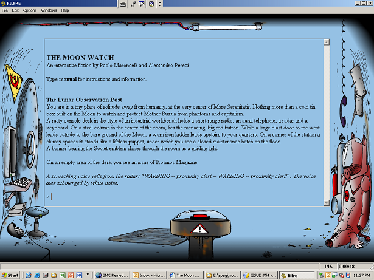

SPAG
The
Society for the Promotion of Adventure Games
ISSUE
#54
SPAG #54 is copyright (c) 2009 by Jimmy Maher.
Authors of reviews and articles retain the rights to their
contributions.
All email addresses are spamblocked -- replace the name of our magazine
with the traditional 'at' sign.
IN
THIS ISSUE
Editorial
IF News
Spotlight on Aaron Reed's Blue Lacuna: Developing Blue Lacuna: Twelve Lessons Learned by Aaron Reed
blueful Review Blue Lacuna ReviewYou Find Yourself in a Hospital Room. You Can See Your Dad Here by Nate B. Dovel
Interviews with the Top Three IF Comp 2008 Finishers: Jim Munroe (author of
Everybody Dies)
Eric Eve (author of
Nightfall)
Jeremy Freese (author of
Violet)
A Conversation with Stephen Granade on the "IF as Casual Game" Aesthetic
One Room Game Comp 2008 Reviews: Bad Toast Escapade! The Moon Watch
Other Game Reviews: A Bear's Night Out Phantom of the Arcade Ungodly Earth: The Desert of Dreams Waiting for the Process (Horse Needed!)
EDITORIAL
Most of our discussions about IF
tend to focus on what the form does poorly or not at all. We haven't
even arrived at a completely satisfying way for the player to
communicate with others in the storyworld, much less managed to make an
NPC that reacts meaningfully to said interactions; the player's freedom
of choice in most games is largely illusionary, limited to local
circumstances rather than influencing the outcome of the narrative as a
whole; even the parser we still wrestle with, struggling with the
ridiculous number of ways any action can be expressed in natural
language. These discussions are all necessary, of course, for us to
develop IF as a viable (permit me a bit of pretension here) literary
form, even if many problems may never be solved and others may not
really be such huge problems at all. (More on that in a moment.) I do
think, though, that we should occasionally also think about what IF
does well already, if only to make sure we take advantage of these
natural strengths in our work. Perhaps there are even one or two things
that IF does better than just about any other form of writing.
IF is wickedly good at setting. Remember
Anchorhead?
Remember the way that you could almost feel the icy rain, almost smell
the decay? So many of the standard tropes of IF -- the second person
mode of address, the present tense, the emphasis on small details --
naturally lend themselves to vivid, immersive settings in the hands of
a good writer. Further, IF actively encourages you to poke at the
scenery, to explore and discover -- and this in turn furthers your
engagement with the storyworld. I hesitate to use the word "embodied"
because it reminds me of a
certain game from last year that I absolutely loathed, yet I can't help but feel that it applies here. IF
is
an embodied form of writing (and reading) which places you inside its
storyworlds rather than forcing you to view the action from on-high in
the manner of even the most vividly written print novel.
IF is wickedly good at characterization.
What? I hear you gasp. No, really, it's true -- as long as the character in question is the PC. Once upon a time, of course, with
Adventure
and even many of the early works of Infocom, the player was encouraged
to imagine herself as the protagonist. Now, though, the player and the
player's avatar are often -- not always, but often -- more separated.
Rather than imagining ourselves in the world, we rather play a
personality at least partially pre-fabricated for us by the game's
author. This approach is of course more restrictive. (More on
that
in a moment.) But it opens up great literary possibilities for the form
without which many of our finest modern games could not exist. Some are
really constructed around this relationship; what would
Lost Pig
be if the player played herself instead of Grunk? We can of course
learn a great about a character in the course of a novel, but we can
identify that much better with an IF protagonist because we are privy
to all of his thoughts and feelings, even the trivial ones, as we
(here's that word again) embody him in the storyworld. There are a lot
of shades of nuance to the player / PC relationship that might not be
immediately obvious. Nick Montfort has written that we learn a great
deal about an IF PC not only through what we/he do, but what he refuses
to do. If I attempt to punch another character in the face in a tense
situation, and am told in reply that I would never do such a thing, no
matter how angry, I've just learned a great deal about my avatar's
character, information that might take much more time and contrivance
on the author's part to convey in a novel.
I could lump both of
these strengths -- and, undoubtedly, others -- together under a word I
like to throw around with considerably abandon when I talk about IF:
immersion. IF does immersion better than just about any other form
of storytelling. Even the parser, that aspect of IF just about every
player -- and every single author who has struggled with the countless
ways his players try to phrase even the simplest ideas, scratching his
head all the while and wondering just how they came up that
that
twisted diction -- seems to hate as often as they love, contributes to
immersion in IF. Leaving aside the countless times the ideal is not
achieved in even well-tested games, how great is it to just
type what you want to do in the story and have the story respond
(hopefully coherently)? It's the most natural, human, beautifully
simple model of interaction. Every other interface is finite, but a
parser at least appears infinite. Our interfaces aren't cluttered with
buttons and gadgets; just a blinking curser, an invitation to do
whatever seems natural.
I am writing all of this today partially
because some criticisms I read of IF seem to misunderstand what the
form is -- for me, anyway -- really all about. I like to talk about the
two I's: interactivity and, yes, immersion. The former quality is the
first thing we tend to think of when we compare IF to other forms of
literature. That's not hard to understand; "interactive" is after all
the first word of the form's name! But when we over-fixate on
interactivity above all else, we can easily end up complaining because,
say,
Lost Pig won't always us
to just run amok, killing the little wizard fellow and everything else
we encounter -- you know, the way an orc normally behaves; or even
because
Zork will not let us
really
eat our sword. Chris Crawford has has leveled these types of complaints freely over the years. In his book on "interactive
storytelling," he criticizes
Planetfall
for not allowing the player a way to prevent Floyd's famous sacrifice,
and rather off-handedly dismisses IF as a whole for similar reasons.
(Personally, I'm happy to criticize
Planetfall
too; but I criticize it for not having the guts to stick it to its
dramatic guns, but rather bringing Floyd back in a maudlin ending that
makes his noble sacrifice meaningless -- even if it did set the stage
for an underrated sequel.) Crawford envisions "interactive
storytelling" as totally free-form, as a collection of
personalities interacting in a storyworld with no pre-scripted
narrative arc at all. What he ends up with, at least currently, looks
like this:
Johnny flee from Billy.
Billy exclaim greatly.
Sheriff find Billy.
Sheriff take Billy to home.
Sheriff tell Mom story.
Mom exclaim greatly.
Sheriff go to town.
Sheriff find Doc.
Sheriff tell Doc story.
Sheriff request Doc that Doc go to home.
Doc go to home.
Sheriff find Dad.
Sheriff tell Dad story.
Dad go to home.
Doc tell Mom that Billy health very negative.
Mom request Doc that Doc make Billy health positive.
So.Yeah. (That snippet is taken from Crawford's article in the excellent
Second Person,
by the way.) What Crawford is working on here may turn into a wholly
viable new form. He's certainly a smart enough, committed guy. I'm
pretty sure that it would not have much claim to literary value,
though, and I'm not even sure I would call it "storytelling." The thing
is, if you envision IF as a literary form like I do, you
need an (at least partially pre-crafted) plot, you
need vivid, descriptive writing, you
need structure.
And all of those things require an author, and a model of creation more
reminiscent of the good old "individual artist creating individualized
work to be enjoyed by others" model than the sexier Web 2.0
collaborative community model. (
Stephen Bond
has expressed some of these sentiments better than I do here.) If you
want IF to be an open-ended sandbox -- and occasionally comments and/or
complaints on the newsgroups and other places suggests to me that at
least a certain number do -- that's of course fine. I just wonder,
though, if that is really a niche that IF can fill. Perhaps it is best to
look elsewhere for that sort of thing, or even (like Crawford) to just
invent a new model.
The way I see it, interactivity in IF should serve immersion. By placing the player
in
a story and giving her (inevitably limited) agency to guide the
story, we can immerse her in the setting, in the role she is playing,
that much more. Even when I was twelve years old, I saw the form --
albeit unconsciously -- this way. While my friends were typing curse
words into
Zork or trying to see what humorous responses they could elicit by trying to do outrageous things, I was
there
in the Great Underground Empire, trying to do what a good adventurer in
that situation ought to do. None of which is to argue that I think
excessive, restrictive linearity is okay. I rail against
that
all the time in reviews. My ideal model would have the player allowed
to do anything her avatar might reasonably do in that situation. If she
is playing a detective investigating a murder scene, she might choose
to dust the area for fingerprints, or talk to the guy who lives next
door to see if he heard anything, or follow the killer's tracks from
the broken screen door where he exited. She couldn't, however, dance
naked on the corpse while shouting satanic slogans. (Unless the
PC is an unbalanced devil-worshiping nudist slumming it as a
detective, of course. In that case, it's all good.)
Meanwhile,
my excuses for delivering each issue of SPAG later than I plan might be
getting tiresome for you. So I won't say anything about a certain
Master's Portfolio I've had to create, but rather just say sorry, and
that I hope this issue is worth the wait. It features Aaron Reed's
huge, and hugely important, new game
Blue Lacuna
as its centerpiece: we have not only an in-depth review but
also an article from Aaron himself on the lessons he learned in
creating such an ambitious work. We've also got Comp winner interviews!
And a couple of other goodies to complement a nice assortment of
reviews. As usual, thanks to everyone who contributed, thanks to you
for supporting IF and supporting SPAG, and see you next time!
Back to Table of Contents
IF
NEWS
Spring Thing 2009Greg
Boettcher's annual competition for longer IF works gets underway in
just a few days as of this writing. I'm going to try very hard this
year to actually play the games and vote on them within the judging
period. Won't you join me? Spring Thing is a good cause, and it
deserves more support than it has generally gotten.
http://www.springthing.net/2009/
One Room Game Competition 2008Francesco
Cordella's One Room Game Competition produced another group of
interesting games. Four are in Italian, three in English, with the
winner being the English language
The Moon Watch by Paolo Maroncelli and Alessandro Peretti. I review the three English games a bit later in this issue.
http://www.avventuretestuali.com/orgc/orgc2008La Comp
más Monstrousa
The
"Most Terrible Comp" for Spanish-language IF ended on November 22,
2008. The theme of the Comp was legendary monsters. Four games were
entered.
http://www.wikicaad.net/La_Comp_M%C3%A1s_MonstruosaEnvCompDavid
Fisher's series of minicomps for experimental, boundary-pushing works
of IF has, alas, not been exactly bursting with entrants. The latest,
though, Env Comp (for games taking place in unusual environments) has
attracted two entrants that each look quite interesting. And hey,
people, help David out a bit, would you? He still has a few more of
these minicomps coming up for you to enter, beginning with the
NPCComp on June 15. (I even get to judge your work in one or two of them. What
more could you want?)
https://ifarchive.org/indexes/if-archiveXunprocessed.htmlThe Endling Archive
Kazuki Mishima, author of
Buried in Shoes
from last year's Comp, has created a new... something that isn't quite
IF in the conventional sense but is well worth checking out.
https://ifdb.org/viewgame?id=ms15e48egclycv369,105 KeysDavid Wellbourn has written a new short, experimental game that may be of especial interest for the IF theorists among you.
https://ifdb.org/viewgame?id=j3rwlhuy6j6v79qj2008 XYZZY AwardsThe IF community's annual awards show was postponed once or twice this year, but finally took place on the
IFMUD
on March 28. Congratulations to Jeremy Freese, whose game
Violet
won Best Game of 2008, and to all of the other authors whose games won
or were nominated for awards in other categories. Check out the full
list on the XYZZY website below.
http://www.xyzzynews.com/2008winners.htmlIF Article in The Journal of Gaming and Virtual WorldsIF
continues to get considerable attention from the egghead community. The
latest example is an article by Alf Seegret, "'Doing There' vs. 'Being
There': Performing Presence in Interactive Fiction." The journal that
published it is brand new and (obviously) open to IF-oriented
submissions, so there you go, my fellow academics in need of
publication credits.
http://www.intellectbooks.co.uk/journalissues.php?issn=1757191X&v=1&i=1Back to Table of
Contents
Spotlight on Aaron Reed's Blue Lacuna
The big news in IF circles of 2009 so far has of course been the release of Aaron Reed's three-plus-years-in-the-making epic
Blue Lacuna,
a work that is not only massive in sheer size but also rife with new
ideas and approaches to IF. I'm thus thrilled to feature the game in
this issue of SPAG, in the form of a Gamasutra-style After Action
Report from Aaron himself which tells of the making of the game and
lessons learned thereby, and thoughtful reviews of both
Blue Lacuna itself and its web-based prequel,
blueful, from David Monath and Nate Dovel respectively. Enjoy!
Back to Table of
ContentsDeveloping Blue Lacuna: 12 Lessons Learned by Aaron Reed
If
you would have told me in the fall of 2005, when I started sketching a
little map of a tropical island and thinking about an adventure game,
that I'd still be working on that game in 2009, I'd have punched
someone in the face.
It might have been you, for telling me such a vicious joke, or maybe Andrew Plotkin, whose
Hunter, In Darkness
can be blamed for introducing me to modern IF. Maybe even Graham
Nelson, tiring swim across the Atlantic or no, for making a series of
increasingly right-brained languages to allow increasingly hopeless
programmers (read: me) to write games.
Ultimately, though, the
person who most needed punching back then was probably myself. I made a
lot of mistakes in the development of
Blue Lacuna,
mistakes that could have been prevented if only all the other authors
of Tolstoy-length IF had come forward with their advice and
recommendations.
What's that you say? There
are
no other authors of Tolstoy-length IF, because most people value things
like sunshine or meaningful human contact over creating a digital
brick's worth of prose in a niche medium? Somebody (read: me again)
needs another punching.
If you are, however, embarked on or
about to buy a ticket to the long road of full-length IF development,
you might be interested in some of the things I learned during
Blue Lacuna's
months (read: years) of creation. You'll note that many of these things
could apply to any large programming project, because they do: the
larger your game gets, the less it will be like fooling around with
text adventures and the more it will be like serious programming, no
matter how many delightful natural language constructs Graham adds to
Inform 7. Speaking of which, you'll also note that some of this advice
is specific to that language, but hopefully an ambitious person like
yourself can generalize, whether you're working in Inform 6, TADS, or
aspiring to create the first million-word SUDS adventure.
#1: Have Backup StrategiesAbout three months into development on
Blue Lacuna,
when I'd built most of the map, added a lot of scenery, coded the basic
puzzles, and even started working up cutesy responses to interacting
with the animals, I accidentally lost my entire master file.
I
can't remember the exact series of keystrokes any more, but I can
guarantee you it was monstrously stupid. The end result was that in the
space of a few seconds I had saved an empty text file over my game and
closed the text editor, out of reach of undo. Three months of work were
gone, like that, and it took me another three months before I could
stand to start all over again.
The moral of this story is that
we're all monstrously stupid at times, so the only defense is to have
an automatic backup strategy in place, preferably more than one.
In
the past few years a large number of good backup tools have arrived,
and laziness is no longer a valid excuse for not backing up. Macs since
2007 come with Time Machine, which backs up all your data every hour to
an external drive; the free service
Mozy is
available for Macs or PCs and auto-saves up to 2 GB of stuff to secure
online storage space. Many FTP programs have an "auto-sync" feature
that can be set to back up a folder on your computer to a folder on
your website. There are a number of other solutions, but the key words
here are
automatically and
daily;
anything that involves you having to make an effort, like burning CDs,
is doomed to have been forgotten at the worst possible time.
Backing
up is different than version control, which is also useful to have, but
obnoxiously more difficult to set up for non-geeks. Version control
keeps track of all the changes you make to a file and lets you compare
the present copy to any past version. Unfortunately, there aren't
nearly as many good tools for easy version control (honestly, I haven't
found any), and Inform 7's IDE-format makes it difficult to integrate
with version control software, anyway. (A built-in versioning system
would make a fantastic addition to Inform 7, particularly if it also
packaged up the extensions you were using.)
#2: Don't Keep Changing the DesignBlue Lacuna evolved. Boy howdy did it evolve. It used to begin in Tomahna (you
Myst
series fans know where I'm talking about) and be interactive fan
fiction. The seven dream sequences were finished before I changed the
underlying mechanic and had to completely rewrite them. The final game
has three epilogues, but I wrote at least twice that many endgame
sequences during development. The conversation system kept needing new
features, which got patched on and patched on until the final system
became a nearly unmaintainable mess. I kept discovering new things I
thought Progue should be able to do, and diving back into his
spaghetti-like code to add them; as a result he will still quite often
start behaving in ways that are not only inexplicable but often
completely impossible, based on how I thought he worked.
As a
result of all this, I've now spent a significant percentage of my life
staring at messages like "Progue swims past you through the desert,
snoring" in abject frustration and sinking despair. Much of this could
have been prevented if I'd worked out from the start exactly what he
did and didn't need to be capable of doing, and stuck to that design
rather than blindly coding.
Some degree of iteration,
refinement, and reworking is only to be expected in any creative
project. It's natural for your design and game ideas to evolve over
time. And in fact, the Inform 7 environment encourages you to adopt an
iterative, compile-and-try-again approach.
But it takes longer
to develop ideas for an interactive project than for a novel or a
screenplay, and much longer to implement them: you're not just changing
the words but creating a whole different possibility cloud of options.
In a larger project, as more and more rules, objects, systems, and
scenes come into play, iterating starts to break more things than it
improves: fiddling here breaks something over there. Before you know it
even minor changes cost you hours and hours of time, and make all
previous testing now suspect.
So: take the time to thoroughly
lock down your game's design as much as possible before you begin
coding. Plan out how all the puzzles will work. If you've got multiple
endings, understand in detail what conditions lead to each one. If your
game has exciting new features, develop them as standalone extensions
or make small demo games to test them out first.
Once you have
your design, take the time to really think it through. Are there
branches of the story, or puzzles, or conversations, or rooms, that
you're not really looking forward to coding? That may be a sign that
they're boring, or redundant, or ill-thought out, and you should
redesign them now. Are there areas you've mentally avoided, thinking
"I'll just deal with that when I sit down to code it?" Floyd says
"Danger!" Deal with them
now.
Narratively,
you can find flaws in your design by sitting a friend down and having
them run through the story as if it's a role-playing game: "What do you
do next?" If your player gets confused or bored by certain sections, or
you find it awkward or difficult to go through a sequence, that's a
sign it could stand another revision.
The key is to iterate and evolve as much as possible before you begin to code.
#3: Get Feedback Early OnWe've
all heard the advice to have beta testers play through your game after
you've finished it. Unfortunately, I'm starting to think this advice is
all wrong. If your game is already finished, there's not a lot testers
can do to help.
Sure, they're fantastic for finding typos,
broken puzzles, objects that need better implementation, and getting
that overall polish. But there's a pretty sharp limit on the extent of
the changes you'll be able to make in the final stages of your project
(see above). If your testers have problems with the overall structure,
the characters, the style, the conversation system, the pacing, or the
mechanics-- you know, the actual game itself-- the best you can hope to
do is slap some patches on the underlying problems (which is likely to
introduce new bugs and be a less-than-ideal solution anyway).
Professional computer games these days are playtested for
years
before they're released. As soon as there's something that compiles, no
matter how rickety, unfinished, disconnected, or unrefined, testers
start playing it and making observations. This ferrets out problems
with the basic mechanics of the game: this isn't fun, that takes too
long, these things will suck no matter how good the final art looks.
Obviously
the average IF author doesn't have the resources of a major game
studio, but that doesn't mean this model is useless for us. A better
approach to IF testing, and one I hope to try with my next game, is to
assemble a core group of testers not when you're
finished, but before you've even
begun,
who will be with you through the whole process of creating the game. As
you code new puzzles or systems, you can have your testers fiddle with
them and give feedback; when the game starts coming together, you can
have them test it for flow, pacing, and logical problems even before
you've implemented all the scenery and invested yourself in the
specifics.
If the end result is interactive, the process of creation ought to be too.
(Note:
you might be thinking that not everyone has a small army of testers
lining up to help test unfinished games, like David Whyld. No problem.
Find three other people who aren't David Whyld and agree to be standing
testers for each others' games-in-progress.)
#4: Try Your Experiments in Smaller Games FirstBlue Lacuna
has easily a dozen weird and experimental elements. Some years into the
project, I decided I needed some feedback on them: the highlighted
keywords, the conversation system, the compass-less navigation. I
decided to release a "Sneak Preview" version in the 2008 Spring Thing,
with all of the core systems in place but only the first half of the
story. I hoped a competition release would lead to some public
discussions and feedback, so I could see whether people thought my
various experiments were working or not.
Instead, all I got was
a series of arguments over whether the game should be disqualified for
being unfinished; some people seemed to take the release as a personal
insult. There was no public discussion of any of the features I'd hoped
people would talk about. The game placed last in the comp. End of story.
After reflection, I realized that if I'd picked
one of those new features, used it in a single and much shorter game, and entered
that
in the Spring Thing, I probably would have gotten much more focused
discussion on the pros and cons of that experiment. Then I could have
taken that advice and gone on to work that bit into my larger epic, or
tweaked it and revised it as necessary.
Alternatively, I could have announced an "open beta" (as Emily Short has recently done to much success with
Alabaster)
or released the game outside of a competition, where I wouldn't have
been held to rules about the nature of the content or the allowable
forms of discussion.
The point is that a competition is not the
place in the IF community for works in progress (IntroComp excepted).
The second point is that there are not enough places in the IF
community for works in progress. Feel free to create some.
#5: Design with Debugging in MindInform
7 is great for whipping up games with a minimum of programming
knowledge. It's not particularly good at encouraging people to use
time-tested good programming skills (like "don't use global
variables"), which becomes more and more of a problem the larger a
project is. Additionally, it abstracts the process of compilation and
execution behind user-friendly layers, which can make it more difficult
to figure out what's going wrong when something does.
Debugging
is a particular problem since I7 lacks features that a more
general-purpose language would offer, such as step-by-step tracing, or
profiling tools to help optimize for speed. There isn't a console to
dump error messages to, and you can't check or change the value of
variables in mid-execution.
To counteract all this, it's doubly
important to think about future debugging while you're designing and
coding. Write yourself a generous set of debugging verbs that let you
alter important game variables, skip around both geographically and
chronologically, start and stop special events, and alter the inner
workings of NPCs. Make use of existing debugging extensions like the
excellent "Simple Debugger" by Michael Hilborn, which lets you tag
in-game objects as debugging foci and then easily switch on or off
debugging output connected with that object.
In Glulx games, you
can use the "Flexible Windows" extension by Jon Ingold to create
testing commands that open windows continually displaying debugging
information. For BL, I had a command to track my main NPC that opened a
five-line window at the top of the screen, constantly displaying
several dozen variables related to his state, location, internal
variables, participation in conversations, and anything else I thought
might be useful. Later, I created a "god mode" that let me alter most
of these variables via an in-game menu.
Finally, familiarize
yourself with the debugging tools that do exist. These are not
documented very well: see the "Appendix B" document on the I7 website
and skip to the "Tests Template" chapter for full information.
ABSTRACT, ACTIONS, GONEAR, PURLOIN, RANDOM, RELATIONS, RULES and RULES
ALL, SCENES, SCOPE, SHOWME, and SHOWVERB are all useful at times. Use
TEST and/or the Skein to create quick ways to verify that sections of
your game still work.
#6: Report BugsA quick Gmail search reveals that, over the course of
Blue Lacuna's
development, I sent in 104 Inform 7 bug reports. The vast majority of
these were fixed in the next build, or at least responded to with
helpful information on my problem.
Filing bug reports-- with the
author of your language, extension authors, and interpreter authors--
is well worth the time it takes, and serves to improve both your own
game and the games of future authors using those tools. Additionally,
the process of isolating your problem and thinking through how to
explain it clearly is useful in and of itself; I'd say nearly 50% of
the bug reports I started to fill out I didn't finish, because I
realized I was doing something wrong myself.
#7: Promote Your Game Outside the IF CommunityTo help promote
Blue Lacuna, I created a web experience called
blueful
that set up my plot, got people used to the idea of typing in text to
receive bits of story, and didn't require anything to be installed or
downloaded to begin. To launch it, I posted a status update on
Facebook, e-mailed the link to everyone I knew, and posted it in a few
related forums (one for
Myst
fans, one for adventure gamers). Enough people liked it that they sent
the link to their friends; a few minor blogs picked it up, and then a
few major ones; it caught on. As a result,
Blue Lacuna-- which is linked to at the end of
blueful-- has been downloaded nearly 2,500 times. This is a lot more people than are usually hanging out on ifMUD on any given weekend.
You
go to a lot of work to make your game. Why not make an effort to get
more than the usual suspects to play it? Post it on the web in an
online version**. Send it to indie gaming websites. Enter it in
festivals. Promote it to audiences interested in your subject matter--
Peter Nepstad had huge luck selling his
1893 to history buffs.
By
doing these things, not only are you increasing your own audience,
you're exposing new people to interactive fiction, and helping to
ensure it sticks around as a medium for a long time to come.
(**
see Zplet, Parchment, Muttonate, Flaxo, or ZMPP for z-code games;
clever coders willing to spread the web-terp love to TADS and Glulx
will receive boundless quantities of adoration from casual gamers
worldwide.)
#8: Release Your Innovations as ExtensionsBefore
you start your project, do a thorough review of the extensions page for
the language you're working in. Extensions get very little promotion;
there's a good chance some clever feature you're thinking of has
already been developed and tested by someone willing to share their
expertise. Why reimplement the wheel?
Conversely, if you come up
with a clever feature of your own, take the time to develop and test it
as an extension. Not only will this allow other authors to benefit from
your work, but the process of refining something into a standalone
extension ferrets out a lot of bugs and design problems that may not be
apparent with code that's scattered and interwoven into your
masterpiece.
Blue Lacuna
led to the extensions "Intelligent Hinting," a way to track player
progress through a story and auto-suggest hints; "Remembering," which
parses references to seen but non-visible objects; "Numbered
Disambiguation Choices," which fixes the dreaded disambiguation loop;
and "Poor Man's Mistype" and "Smarter Parser," which together increase
by about 50% the percentage of correctly parsed newbie commands. All of
these are available on the I7 extensions page.
#9: Practice Do, Don't Show, Never TellA
maxim in the film world is "Show, don't tell," meaning that since film
is an inherently visual medium, it's more powerful to show something
onscreen than to have it explained via dialog. (See
Blade Runner with voiceover versus
Blade Runner without voiceover for a painful example of this.)
Since IF is an inherently experiential medium, it's more powerful to make the player
do the things that advance the narrative than to show them, and especially than to tell them.
Blue
Lacuna's dream sequences, which serve a narrative purpose of explaining
backstory, went through three iterations. Originally, the backstory was
just explained in a series of text blocks by a narrator character. It
quickly became apparent that this was flat and uninspiring.
In
the second iteration, the player got to see a series of tableaus where
they could piece together what must have happened by interacting with
objects and examining scenery. This was better (and is the approach
most adventure games use) but still not great.
In the final version, you actually
become the people the exposition is about in each dream, and actually
perform
the actions that lead to the unfolding story. This is better on every
level because it plays to the strengths of the medium. IF is about
objects and actions; by telling your story through player actions
involving objects, you're telling it the best way you can in the medium.
This
can manifest itself in all kinds of ways. Instead of reading a letter,
can you actually meet the author in a conversation? Rather than telling
the player his character is overweight, can you code in a labored
response for going up steps? Rather than taking over for the player in
a "cut scene" or text dump, can you persuade him to take the initiative
and perform the dramatically necessary actions himself?
In your design phase, keep repeating to yourself: Do, don't show, never tell.
#10: Watch Out for Nonstandard Game ModesInform
7 is filled with assumptions that each turn of your game will be more
or less like any other: every turn do this, instead of going do that.
The more elaborate your game becomes, however, the more likely it is
that some turns will
not
be like every other. During conversation, say, you might want a lot of
things to work differently; or during combat. A tense chase sequence or
drama-filled interlude might not want to play by the same rules as the
rest of the game.
It's easy, of course, to override the default
assumptions for your nonstandard turns (Every turn when combat is
happening, do this.) But it's not so easy to remember to go the other
direction: to overrule your generic rules to not apply when they
shouldn't. Whenever you introduce a unique environment, all of your
existing "every turn" rules (and instead rules, and before rules, and
procedural rules, and so on) will still apply. In a very large project,
you may have written some of these conditions months ago and not
thought about them since. Here's another case where careful planning
early on can save you from obscure, hard-to-find bugs. If you've
pinpointed from the beginning any unusual conditions or states, you can
work that into all of your rules from day one. (Instead of smelling
when the player has an undamaged nose, say "You love the smell of
napalm in the morning.")
A huge portion of
Blue Lacuna's
bugs were related to cases where I didn't think through the
ramifications of special scenes or states that were added later in
development: conversation, dreams, flashbacks, visits to other worlds,
pivotal events, and so on. Sometimes conditions written before I
considered these states were changing variables or altering rulebooks
in utterly inscrutable ways. Take the time to plan for this stuff early
on, and you'll save mounds of debugging time.
Another point with
special environments is to make sure you test the edge cases, such as
the first and last moves the condition holds true. It's not always
clear what order various rules will run in: whether a scene will begin
before an "every turn" rule runs, or whether this "last every turn"
rule will actually be the last every turn rule. Develop testing
commands that can show you exactly what order things are happening in,
and make sure sequences are playing out internally the way you expected
them to.
#11: Program ConsistentlyNatural
language is sloppy, but programming is exact. The more complex your
project gets, the more you're programming, and the more your sloppiness
will come back to haunt you. Here are a few examples of ways you can be
more exact.
Name Space Issues:
If you call something a "blue door" in one spot, something else a
"door" in another, then in some third spot have a condition like "if
the door is open", you and your game won't necessarily be in agreement
over which door you mean, which can lead to very subtle and frustrating
bugs. Name things verbosely if possible, and use an object's full name
whenever you know there are similarly named objects elsewhere in your
code.
Scenes: Because
scene names often refer to characters or items that are their own
objects elsewhere in your code, I've found it helpful to hyphenate
scene names. That way Harry, Sally, and When-Harry-Meets-Sally will
never conflict with each other. If you're already using dashed-words
for something, you could try camelCase, underscored_words, Things
Written In All Initial Caps or even THINGS WRITTEN IN ALL CAPS. These
conventions will also help remind you at a glance what sort of thing a
bit of code is dealing with.
Extensions:
When writing extensions, err towards more specific names rather than
less specific names. If you're creating a new "window" kind, this might
lead to terribly confusing errors for authors opening custom Glulx
windows, implementing Windows PCs, or adding locations called The Space
Under The Window. Instead, name your kind something like "latchable
window" or "decorative window" or "interior/exterior window."
Be Wary of Pronouns:
You can say things like "It is open" in Inform 7 code, but take extra
care that you and the game agree on what you mean by "it." Whenever
you're mentioning more than one object within the same paragraph, be
especially wary, and take pains to do an in-game test that verifies
your code is functioning correctly.
Use One Syntax:
You can say "now x is y" or "change x to y," but it's a lot easier to
pick one of those and always use it. Inform 7 often allows a lot of
variation in the way commands are phrased, but you'll have to remember
less syntax and your code will be more readable if you pick your
favorite way of phrasing each command and stick to it.
#12: Comment EverythingIn
a natural language environment, it may seem that comments are
redundant. What's the point of writing them when the code is so
readable, anyway?
Use comments to record your design
philosophies. Explain why you're using a list instead of a table or
vice versa, or why you decided to make something a rulebook rather than
an activity. If something needs to be a "check" rule instead of a
"before" rule, note why in a comment. If you review some piece of code
you wrote months ago and think "Why on earth did I do it that way?"
then you forgot to comment.
Use comments to record solutions to
complex or subtle bugs. If you need to declare something in a certain
place or in a certain manner, comment why. If you fixed a bug by using
a phrasing other than the one you'd normally use, explain in a comment
why you had to phrase it that way. That way you won't accidentally
"fix" your code to something that doesn't work again.
Use
comments to record concessions to extensions, to explain workarounds to
problems, to cross-reference other bits of code that may be far, far
away.
Writing IF
is always a chore, but you will spend much less time at it if you do a
little homework first. Commit to coming up with a full and detailed
design before you start fiddling around with code. Develop new systems
as extensions to force yourself to think through their design, and
allow others to benefit from your work. Get other people involved in
the testing and design as early as possible. Plan your code to be
debugged and to hold up no matter how complex it gets.
If I'd
had all this advice four years ago, I could have finished two or three
games since 2005. Just think: we could all be playing
Blue Lacuna 2: Electric Blue-ga-lue or
Whom the Telling Changed With A Vengeance right now.
OK, now I really do need to be punched in the face.
Back to Table of
Contents
| Title: |
blueful
|
| Author: |
Aaron Reed
|
| Author Email: |
aareed SP@G gmail.com
|
| Release Date: |
January 26, 2009
|
| System: |
Web-based
|
| Version: |
|
| Reviewer: |
Nate Dovel
|
| Reviewer Email: |
atreyu918 SP@G gmail.com
|
blueful is a fascinating experiment in storytelling, I'll give it that. I suppose it is meant to serve as the backstory for
Blue Lacuna,
a longer work of more traditionally structured interactive fiction,
which I have thus far only sampled. Parallel to the dimensional
traveler whose exploits
blueful
documents like messages in bottles, you jump from one internet
community or publicly customizable application to another, being fed
the story in dribs and drabs through the specific tools and input areas
of the site. The installment might be read aloud to you at an
audio-hosting site, or segmented amongst various days on Google
Calendar. Sometimes it is simply split between entries on a blog
or forum. At the end of each installment, you are given a link to
the next page of the story.
You are an artistic prodigy,
discovering one day you can paint yourself bodily into new (at least to
you) universes. Nothing can accompany you but what you create with
your own hands. This results in a rather solitary existence,
though your passion for painting and exploration helps you
endure. One installment (which I reprint in its entirety, begging
the forgiveness of the author) seems to give purpose to this innovative
story mechanism: "Your memory of those days lies jumbled and
fractured, like an upended puzzle, each piece perfectly distinct in
itself, but the bigger picture hopelessly muddled." You, the
player, are not traipsing about the internets merely for the novelty of
it. Rather, the web landscapes you journey through are like the
shadows of these worlds, and you track the footsteps of the
protagonist, each trail through a different kind of alien brush.
But while that excerpt may be the vision statement for the innovation with which
blueful
must be justly credited, it also describes the key roadblock to fully
enjoying the experience. The author has a predilection for very
long, poetical, rambling prose. Some readers love that style,
luxuriating in warm, aromatic waves of words as they roll melodiously
in over the beckoning beaches of dream, of soul, of purple, vivacious
effluvia. And some find all that a teensy bit
pretentious. While I'm not completely against flowery language, if
I must swallow that pill, I need some ice cream to help it down.
blueful's
unique structure, though exceedingly nifty on its own merits, is
actually anti-dessert when it comes to digesting deep, delicate
poetry. You'll thread your way through the meaning of one stanza,
but then you must re-enter reality, copy or type the next link into
your browser, and adjust to the eccentricities of the new website, and
by that time, you sort of forget where you were. This would be
less of a problem with blander prose, or if each segment lasted longer
than just a few sentences. I felt I had to change focus so often
that everything stayed blurry. As I said, conjuring this feeling
might be the author's intent, to firmly fit you in the character's
disjointed environment, but user-friendliness is still
important. Perhaps each avant-garde arrangement could be prefaced
by the text from the last page, written out normally, to ease us in.
The
arrangements really are ingenious at times, though, sometimes in sight
of brilliant. I loved the intimacy of reading the story written in
ink on a hand, or in the ample dust covering a TV screen. And I
had never even conceived of YouTube pop-up captions used for anything
but obnoxious pleas to "CHECK OUT MY OTHER VIDEOS!!!1", let alone the
carefully choreographed story-dance the author created. It is
always refreshing to see an accessory to a medium turned on its head
and used as the main vehicle. And each vehicle here fits the
passenger: the first new world you encounter is also the first
installment to be read aloud, heightening the effect of newness, like
Dorothy emerging from her black-and-white house into the technicolor
Oz. When you first meet your lover, it is amongst the profile
entries on a personals site, and your first time making love to her is
told through a colorful scrawl on a Dabbleboard page, some words
untidy-looking, some in perfectly legible, even font. The contrast
evokes your coming of age and the simple, organic act you are
sharing. Though the story is short, I found myself very attached
to these characters, perhaps because I seemed to share their journey,
even if in simplified representation.
One unintended annoyance
on the journey, though, is the problem of broken links. On my
first go-through, two pages- Craigslist and something called
TinyURL.com- had apparently expired or been removed. The author
accounts for this possibility, sort of, with a keyword
system. Each installment is bookended by a special word which logs
a broken link and reroutes you to its subsequent chapter. But...
no substitute is provided for the missing chapter. You're left
with a glaring gap. It would have made far more sense to note the
error and link to a plain text representation of the AWOL story, after
which you could be guided back to the normal path. I realize plain
text is not as interesting as the creative manipulation of Web 2.0, but
it's better than being left wondering until the author gets the problem
site behaving again.
This raises the question of how the
author intends to preserve this work long term, or if he will let it go
the way of sidewalk chalk art and Buddhist sand mandalas. I hope
it will be maintained somehow, because it is an important work, if
brief and somewhat scattershot. I look forward to exploring more
worlds in
Blue Lacuna, hopefully with that same sense of player-enmeshed discovery.
Back to Table of
Contents
| Title: |
Blue Lacuna
|
| Author: |
Aaron Reed
|
| Author Email: |
aareed SP@G gmail.com
|
| Release Date: |
January 26, 2009
|
| System: |
Glulx (Inform 7)
|
| Version: |
Release 1
|
| Reviewer: |
David Monath
|
| Reviewer Email: |
dmonath SP@G gmail.com
|
[A warning: David's
review, while wonderfully thorough and thoughtful, does dance right on
the edge of spoilerdom in places. It doesn't really give away specific
puzzle solutions, but does perhaps say more than some might want to
know about the structure of the puzzles and the plot's ultimate
resolution. If you prefer to go into your IF completely "cold," you
might want to play Blue Lacuna first -- I will reveal right now that
David (and I) think that is something you should do -- and then
read David's excellent review. If you don't mind a bit of advance
knowledge, including some that may actually make the game a smoother
experience for you, by all means proceed. --JM]Blue Lacuna, by Aaron Reed, is the newest addition to a relatively
select circle of games which must be mentioned in any discourse on the
maturation and development of interactive fiction, even if not quite in
the topmost tier of quality games overall. Of course, a statement like
that is meaningless without equal parts context and extrapolation on
Blue Lacuna itself, so to briefly satisfy the former, understand that
this reviewer's personal bar is set by such luminaries as (in no real
order, and for different primary reasons)
Anchorhead,
Lost Pig,
Christminster, and
Galatea... so adjust your interpretations
accordingly.
The fact that this must even be discussed says something about the
significance of this work. Key issues of art and gameplay include
setting, pacing, character interaction, puzzles, narrative, and theme... in other words,
Blue Lacuna addresses so many elements of storytelling that
it is a bit of a challenge structuring an analysis of it all. However,
Mr. Reed’s significant changes to the player-game interface prove a
natural starting point for discussion. (It should be noted at the time
of this writing I have no experience with his prior work, so it’s
possible that I am impressed by certain innovations which may elicit
polite yawns from other more savvy users.)
Blue Lacuna is a tremendous step forward in sheer accessibility to
all those beyond the intimate IF family, wherein a socially-based
telephone roster could perhaps be memorized in an evening.
Blue Lacuna
contains, from the very beginning, a highly involved help system which
explains each new concept of gameplay as it arises, from examining
objects to conversing with the few but colorful inhabitants. Even
should one choose to forgo the informative formal help documentation,
it is entirely possible to begin play with no interactive fiction
experience and emerge an hour later a full initiate by virtue of
unobtrusive tips such as the following:
Tutorial: Type emphasized keywords like MAN or WOMAN to advance
the story. Type KEYWORDS if these words do not appear emphasized in
the previous paragraph.
In
the very first scene, one is
confronted by a statement with “man” and “woman” written in bold blue
text, the response to which determines the player character’s
sex. Almost every room/environment description contains similar
keywords
which indicate conversational topics, easily examined objects, or, as
indicated in the above tutorial excerpt, advance the story in various
ways.
While the player is by no means restricted to only examining
keywords, they provide a clear starting point for interaction in a
given scene. Simply typing a noun examines it by default, which is
very concept based, further softening the parser as a barrier between
the game world and the intellect. While we do think specifically about
pushing things, or turning an oven dial to 350 degrees, the vast
majority of our cognitive processing consists of near passive
observation. No one thinks, "Self, examine stunning brunette": one
simply surrenders to the unbidden call of "brunette." And so goeth the
world of
Blue Lacuna.
After finishing
Blue Lacuna (for the eighth or ninth time), I briefly
revisited a number of favorites, such as
Slouching Towards Bedlam,
Metamorphosis, and
Anchorhead, and found myself genuinely frustrated by
the absence of keyword examination which, mere weeks ago, I wouldn’t
have known to lament. It is rather embarrassing to, more than once,
expectantly type
>Galatea
... and be properly chastised for failing to utilize a recognized verb.
Another
new but extremely welcome feature is that pressing <enter> by
itself refreshes the room description. I have ADD qualities and the
short term memory of a goldfish with PTSD, so while this really only
shortens the process from two keys down to one, it may also be viewed
as streamlining the process by 50% and speaking directly to my soul as
a player.
Blue Lacuna also handles automated movement extremely well via a
bank of discovered Landmarks which, once visited, may be returned to at
any time by typing the name of the Landmark. You are told each
location you have passed through, and if something significant happens
on the way, the movement is discontinued and play proceeds from the
point of interruption.
Speaking of movement and direction (which will tie back in at the
conclusion of the following paragraph), the writing quality and
usefulness of descriptions varies. There are two distinct writing
styles, entirely appropriate to two separate realms in game: the
first, encountered at the beginning of the game and sporadically
throughout, is decidedly overwritten, but having recently come off a
reading of H.P. Lovecraft's dream cycle, it's impossible to consider
any other source as truly overwritten. Even so, Mr. Reed’s
self-acknowledged debt to Rand and Robyn Miller of
Myst fame should
perhaps be joined by at least another minor footnote, as “Blind colossi
revolving through unknowable patterns,” is practically a direct lifting
of Lovecraftian prose. After a start like this, I settled in,
expecting an arduous exploration of knowledge and madness, but was
instead impressed by the predominant style of
Blue Lacuna, which is a rich and
thorough consideration of practically any item or concept at hand, free
of inconceivable corpulences pulsing to blasphemous eternal pipings,
and other such Lovecraftian casting department hazards.
Alas, however, the subject of writing style brings us back to
movement and direction; specifically, navigational hazards. The idea
of moving from room to room by typing the name of one’s destination
rather than a cardinal direction is sound and intuitive, but even so,
discovering a compass shortly into the game is a relief as Mr. Reed’s
otherwise absorbing descriptions betray a distinct lack of
spatial-linguistic aptitude. Should one have the distinct pleasure of
meeting him on the street, under no circumstances ask for directions,
because you might find yourself deciphering the following: “Some small
furry creature just darted off to the viewpoint of the mountain from
the rain forest to the north,” an analysis of which is essentially a
linguistic Rorschach test. Many geographic descriptions are similarly
obtuse, and while they can almost always be deciphered eventually, the
additional burden of labor is a most unwelcome inadvertent puzzle.
<RANT>Unlike the maze, which is entirely intentional. A)
I kid you not, and B) we need to have a paragraph here temporarily
setting aside journalistic formality in favor of communicating some
critical user feedback.
A maze!! In 2009? In interactive fiction??
Really?! This was one of two points in the game which resulted in near
profanity. I feel betrayed, insulted, callously disregarded and
manipulated, and this paragraph is set aside to demonstrate there is a
genuine emotional response which games create in players, sometimes as
a result of theme and drama, and other times because of godless,
generally-blessedly-forsaken game mechanics with no possible purpose
other than to pad gameplay hours by utterly derailing any semblance of
plot or mission. I will forever recall the horror and disbelief as I
was forced to haul out the blank white paper and open a new MS Excel
sheet so I could banish this wretched foe sent by the demons of game
design to thwart my sense of wonder and exploration.
</RANT>Just
prior to moving on, I should be clear that the maze was well
incorporated into the setting and featured unique room
descriptions. The mazelike properties consist of one-way room
connections and
meandering paths which switch directions from start to destination, a
la exiting North and returning West. However, while the maze can
be
logically justified by the setting, it ground the game to a screeching
halt while I mapped it out, and due to the life’s demands, set back the
completion of the game by a full week.
Now, ordinarily, it would be appropriate to shift back to
discussing one of
Blue Lacuna’s strengths, but alas, puzzles, the most natural
segue, makes it necessary to reference the Ear. Some may consider the
following to be a spoiler, so skip down to the
“The rest of the
puzzles” paragraph. For all others, this was the single most
personally aggravating aspect of the game...
... fairly early on, it will be clear that you need an to find an
ear to complete a carving, as the solution to a larger puzzle. What
you won’t know, however, is that the ear doesn’t exist yet in the
game. You may spend, as I did, literally
hours
of your life tracing
and retracing your steps, and inspecting every conceivable noun in
every available location (up to dozens) in an effort to find this
ear. You’ll even witness a special scene specifically identifying
the last
known location of the ear. You’ll then observe, via the otherwise
admirable automated help system, small woodland creatures darting off
in the direction you know the ear to most likely be found and be
informed that you haven’t yet explored in that direction. What
will
not happen, under any circumstances, is the discovery of the ear.
Oh no: the ear appears deus ex machina, ever so arbitrarily, at the
beginning of a new chapter, likely several chapters after you first
note your need for it. Literally lying out in the open on the
beach. This is not a bug--this was a deliberate design element,
and it’s
entirely unforgivable to waste your player’s time, the one
irreplaceable commodity in life, by sending them on an impossible
mission in which their frustration is only fueled by their
determination. Especially when not only are there no clues that
the
puzzle is unsolvable, there are multiple clues indicating it
can and
should be solved.
The rest of the puzzles are, as Mr. Reed alludes, distinctly
Myst-esque. There are barely operable steam-powered machines and
cipher locks and multiple forms of codes. Mysterious glowing orbs
entice the curious, hidden stairways unfold, and with only the
aforementioned exception, all can be solved logically. Believe it or
not, the crystal manta you’ll discover on the beach, while possessed of
its own functionality, is
not part of a larger puzzle, just elaborately
implemented scenery.
The scenery, in my opinion, is by far
Blue Lacuna’s strongest point. Lacuna
feels
like a real island, not that I’ve ever been stranded on one. Mr.
Reed is a detail-oriented narrator with an apparent love for
naturalism, and a hundred complementary elements collude to paint a
brilliant image. Even now, well after completing the game, I can
picture Lacuna clearly in my mind, from the gleaming white sand, almost
too bright to look at directly, to the uniquely alien windsigh trees,
to the cabin built right up against an igneous wall and your fellow
castaway’s nest in the cliff. It is all as real as the forest you
played in as a child, or the first time you read Robert Louis Stevenson.
Adding greatly to verisimilitude is Lacuna's cycle of day and
night. There are several distinct phases of the day, generously padded
with turns, so there is an easy, lazy feel to one's exploration. By
the time night comes, and the stars twinkle down, one finds it
perfectly natural to curl up on a soft pile of fronds beneath a
protective tree and let one's mind drift through the worlds beyond.
As light dwindles into evening, fine details become less visible,
and at night, certain regions lost the majority of their
description. While the periodic tropical showers and swimming
don't change one's
clothing or affect one's limited inventory, nor is there any need for
it, given the durable nature of the few game items. There
is one
particular effect of the rain which would be worth mentioning if it
were not such a dramatic spoiler...
As beautifully as the intra-day pacing of the game is handled, the
game as a whole moves in starts and stops. While playing time will
vary greatly (Don't look for the ear! Don't try to repair the broken
pipe!) from person to person, virtually all the story is backloaded to
the last half hour of the game, whereas one might have a Chapter Four
which is seemingly interminable, simply because one may or may not have
yet hit a particular trigger. Most of the game lends itself to languid
exploration, perhaps because the setting is where Mr. Reed's real power
lies. Standing on the beach at sunset is actually worth remembering,
or wading into the ocean at low tide, and the scuttling of crabs and
darting of tropical fish in tidal basins generates a vibrant atmosphere
of life and a functioning ecosystem.
Aside from the wildlife, there are relatively few other living
beings to interact with, although somehow, I think there are precisely
as many (or as few) as there should be. Each person you meet has a
clear and distinct individuality (minus a few dramatic, utterly
appropriate exceptions), seemingly real and deeply human (although as
will be discussed later, also deeply flawed).
Mr. Reed's conversation interface goes a long way to establishing
this feeling and managing our expectations. One initiates conversation
by saying “Hello” in the presence of a character, and from that point
forward, specific topics appear in bold, and the character is allowed
to speak and react just as they should. So effortlessly are we guided
that the topics feel like a natural tool rather than a limitation.
The two characters one will spend the most time interacting with
are the island's other inhabitant, a mad hermit, and your romantic
other, Rume. Rume is only truly dealt with in the prologue, but the
hermit accompanies the player for the bulk of the game. Mr. Reed's
expectation was that players would form unique attachments to the
hermit depending on how one interacts with him over the course of the
game, and there are a few leanings he can be steered into based on
one's responses.
While I experienced a largely amicable relationship with him, he
never wanted to talk about the topics which most fascinated me, so
there was little reason for me to seek out his company, although the
artificial intelligence will trigger interactions with him on a
periodic basis as necessary, so if one becomes annoyed with his refusal
to speak of the Creeper or where to find the blessed wooden ear,
there's no need to speak to him. It should be noted that earlier
versions of the game (most definitely the one reviewed) featured
several bugs which would trap the game in various states because the
hermit's pathing had broken, but I believe that those issues have been
resolved. Please read any release notes Mr. Reed has posted at
lacunastory.com.
Rume is the first relationship encountered in the game, and was a
source of initial engagement, followed by bewilderment, followed by a
tremendous emotional disconnect... but then one of the themes of
Blue Lacuna is art versus love, and love as envisioned by Mr. Reed is a
questionable premise. There are multiple ways to play the prologue
with Rume, but prior to branching out, one is forced to attempt to
leave Rume without saying goodbye, or talking things over with her (my
Rume was a woman: yours will be as you choose). The game's internal
monologue informs the player that she wouldn't understand, which
prompts a host of questions about whether she merely doesn't
understand, or can't understand, and whether and how we've tried to
explain it in the past. One quickly finds that one's character is a
pompous ass, a trifle difficult I hope for most players to empathize
with. One thing that hurt the most was how the player's character
dismisses the things she values, especially when she values them
because they came from the player's own hand.
It is impossible for the player to wake her and try to have a
decent conversation about why one is going to leave her forever...
one has to just coldly do it... at which point Rume wakes on her own
and is quite properly hurt and displeased. There is a sweeping
decision point as to whether one will choose love over art, and in my
run through, I chose love. After living out the next twenty years in
vignettes (in one of which you have go hunting with a pistol (?) and
discover that the words “aim” and “fire” haven't been implemented, but
“kill hare” results in raising the pistol to your shoulder and “firing”
it, something I could have sworn I just tried to do) and being exposed
to random and unexplained arguments between the player and Rume, at
last we wake up one morning to find that Rume herself has vanished.
Apparently she felt trapped and must go discover the call of her
adventuring heart, and other drivel that tells the player one was an
absolute dolt for caring about her, since the only reason she was upset
that the player was going to leave under cover of night was that she
wanted to be the dumper, not the dumpee, and was just biding her time
until she could be as callous as the player had intended to be. Well,
forget that.
The human theme to
Blue Lacuna
is that people don't communicate,
and then they leave. Even the ending where you and Rume re-unite
is
curiously dispassionate and it is never clear exactly what the nature
of your new relationship is. I imagine a platonic crafts-fest
with
periodic breaks in fellowship to pursue some all-encompassing artistic
passion for ten minutes... and a screaming match over nothing in
particular, perhaps resulting from a total lack of open
communication. Once I learned I couldn't respect the characters or
take them
seriously, a great burden of emotional involvement was lifted.
Blue
Lacuna: a training simulator for sociopaths.
The game's great declared theme is a (false, in my opinion)
dichotomy between art and love, even work and love, and a few other
themes can be interpolated along the way, such as the aforementioned
“people don't communicate, and then they leave.” Two more themes are
addressed which I would like to have seen explored more deeply, but
they are unfortunately part of the final three chapters / thirty
minutes of the game, so the powerful and sweeping themes of slavery and
genocide are brought up and glossed over in the span of several turns.
The game concludes with a one-two punch of seeming
non-sequitors. Suffice to say, there is a critical decision to
make which rests at
least initially in your hands, except the game then takes that freedom
from you and places it with someone else. You will find that you
have
been shamelessly manipulated, and just as with the characters'
inter-personal relationships, one's just been strung along so Fate can
do what it had planned regardless.
It's rather awkward to dance around the specifics, but it's
important to understand just how irrelevant you the player will be at
the end of the game. The game will end as it will, regardless of your
choices, as far the main plot (which revealed itself to you moments
ago) is concerned. The game only pretends to give you four choices,
which you present to another character. If you pick choice A, the
character will prepare to fight you to the death (literally) in defense
of choice B, and then ultimately pick D. If you pick choice B, the
character will argue for choice
A--and then choose D! If you pick
choice C, the character will hold forth in defense of A again... and
still wind up picking... no kidding... D. If you choose D, he'll
again champion choice B...
and then pick D!!! Just
like you told
him! On the other hand, you can choose not to fight, and he'll
pick... I can't even write it. The character even has the temerity
to use
completely contradictory logic based on which “choice” you make, having
no actual self-consistency (which, to be fair, isn't noticeable until
one replays the scenario, but still destroys one's belief in the
character as a rational being), and will nonetheless reject it all in
favor D anyway.
Now, carefully comb through the above paragraph and find every
possible alternate ending, and try not to use the letter “D” in your
answer. There are shades of different endings, mildly nuanced, but
unless you are willing to kill this other character, the only way to
impact the story is through sheer backwards meta-gaming -- since the
character always disagrees with you, the only way to get
your way is
to lie to him about your choice, fight him and relent, and then when he
finds you actually agreed with him despite lying to him, he respects
and appreciates you. How twisted is
that. Should you relent and
have been telling the truth, regardless of whether your choice was A or
B, he'll still choose (as indicated above) “D.”
Alternatively, if you don't want to fight, you can press “z” to
avoid conflict until your opponent gets tired and falls asleep,
although he won't talk to you again when he wakes and the game is
apparently unwinnable. That's what standing up for your beliefs
through nonviolence gets you.
Universally in
Blue Lacuna, the portrait of humanity and
interpersonal relationships is a bleak and twisted one. People are
selfish and dishonest, closed to communication, inconsistent and
typically blind to their own pathology; in short, pure sociological
wreckage, and it isn't clear whether this was done on purpose.
When you play
Blue Lacuna, which in general I think one should, the key is to simply enjoy the scenery.
Don't
make the mistake of becoming attached to the characters, because, much
like cats, they are just biding their time until the moment they spot
weakness and can nibble you to death, with irrationality and
inconsistency deep within their souls.
Don't worry too much about the plot, since your choices won't matter unless you kill or cheat and metagame to get your way.
Don't try to find the ear.
Do,
however, splash in the ocean, rescue a beached shark, climb trees,
activate mysterious steamworks, learn the arcane dances of the
bees-of-unusual-size (they do exist), do or do not interrupt Word Day
as you see fit, examine objects merely by typing their names, and find
out when a treehouse is not merely a treehouse.
Back to Table of
ContentsYou Find Yourself in a Hospital Room. You Can See Your Dad Here by Nate B. Dovel
I
should first establish that my dad long ago fell from the game
klutziness tree and hit every analog and QWERTY branch on the way
down. I remember playing
Super Mario Bros.
with him years ago, recall him approaching that first bottomless pit on
1-1. "Jump!" I advise him. He sprints toward the ledge,
hesitates- and runs straight into the chasm like a pixilated
lemming. "Why didn't he jump?" Dad asks as the demise music
plays. On the next try, he runs! Stops at the edge! And
jumps...! But straight up. With just enough forward momentum
to fall right back in the hole.
He's a very smart man, and it's
not even that his hand/eye coordination is lacking -- he's a fantastic
nurse, and however much I play
Trauma Center,
I'm certainly never going to gain his ability to set up an IV line or a
catheter. Dad simply has no button-mashing/eye coordination. So he
has historically stuck with simple electronic games.
Solitaire on the desktop.
Trivial Pursuit on the PDA.
Snake on the cell phone.
So
it with this expectation that I brought my new laptop to his hospital
room a couple weeks ago. Dad's getting some heavy chemotherapy
right now for multiple myeloma, in preparation for a stem cell
transplant to occur soon. I thought that we could play
Crayon Physics or maybe watch funny videos. Something familiar, non-taxing.
When
I arrived, though, Dad was asleep, so I talked to Mom for a
bit. She tells me about this obnoxious employee from the
hospital's billing department who has been harassing them about the
deposit for the hospital stay. Now, my parents have both worked
for this very hospital for many years, so Linda, this billing officer,
should damn well know they are insured and not some fly-by-night,
chemo-stealing hooligans. But she kept barging into Dad's room,
demanding how they were going to pay, calling my mother from Dad's
room, and while she was working just a few floors below, no
less. Long story short, Linda is a fabulous example of something
that rhymes with itch and Mom is itching to tell her so. She
settles for filing a complaint with the billing department supervisor,
from whom she finds out this Bothersome Itch already has few fans and
many detractors. This makes her feel a bit better.
She
shows some interest in my computer, and asks what I've been doing with
it. On a lark, I tell her about Inform 7, and show her the
interface. "Look," I point out. "I can make Dad's hospital
room." I write up a quick paragraph, just a room description, and
compile the game. She is polite, but doesn't really get
it. "I can make stuff happen, too," and I write Dad into the
story, sleeping nearby in his bed.
"You should make him
snoring," Mom suggests, smiling. OK, I can do that. I
describe him as snoring -- "...and burping!" she adds. I laugh and
write the code. For a few minutes, we add some details, including
an ejector button on the hospital bed which will (obviously) wake Dad
up. In reality, Dad awakens soon after (without need of aerial
propulsion) when the nurse comes to check the indecipherable screen of
vital statistics and the chemo drip with the brown paper bag over it,
to keep the sunlight from breaking it down.
Dad inquires as to
what we're doing, and we tell him about the short game. Dad is
amused. I forget who suggested it, but we decide to write Linda
the Billing Officer into the game as the villain. For the next
hour, we have our revenge designing a smelly, lumpy creature who stalks
the hallways with a clipboard, demanding, in a toady croak, that you
sign her forms in blood and give her all your money. Fortunately,
the player learns about Golem's -- I mean, Linda's -- weakness from her
reaction to the radio:
"Hostess Cupcakes! Cream
filled cakes never tasted so great!" Linda's eyes grow large when
she hears this commercial. She licks her lips like a reptile. If
you asked Linda about cupcakes, she would grab you by the collar and
demand chocolate with feverish intensity. Fortunately, you just so
happen to have one of these synthetic delicacies in your pocket, and
should you find Linda deserving, you can throw it out the window and
watch as:
Linda gasps, turns and looks around in
desperation, and runs toward the window after the airborne
cupcake. She cries out "GOOD LORD! SUCH A WASTE FOR SUCH A
BEAUTIFUL PASTRY! DO NOT FEAR, MY DARLING! I WILL RESCUE
YOU!"She will subsequently leap out the window and fall
eight million floors into a pile of garbage. Even in a harmless,
text-based revenge fantasy, my parents are still merciless enough to
not have Linda explode like a watermelon on the pavement, a denouement
I might have preferred.
Anyway, the folks seem to be having a
great time, telling me what should happen while I program
it. After Mom leaves to pick up my little sister from school, I
wonder if Dad wouldn't enjoy playing a bit of a full IF game. As I
wrote earlier, he is not normally a fan of computer games, but he is a
voracious reader, and it might be something he could
grasp. Stupidly, I show him
Hitchhiker's Guide to the Galaxy
first, which is kind of like throwing someone into the middle of a
parking lot, handing them a banana, and telling them to swim. Not
very rookie friendly. After the bulldozer plows him down while
he's still trying to figure out how to use the toothpaste, I suggest a
more forgiving game:
Thy Dungeonman II. For those unfamiliar, this is an IF satire authored by the guys behind the
Homestar Runner online cartoon.
I found the right game. It is wacky, like
Hitchhiker's,
but not so obtuse that Dad can't just explore a bit and chuckle at the
descriptions. The first puzzle solution involves holding your nose
so you can finagle a key out of a toilet without suffering the
smell. However, about ten turns later, Dad's character abruptly
suffocates. "Thou art hilariously dumb. Thou loseth.
Thank thee for playing." We realize he forgot to let go of his
nose! My dad cracks up; he is infinitely amused. We play a
while longer, and it's good. He's having fun with something new,
but which closely resembles his beloved books, and I'm enjoying being
his guide, showing off my hobby. We finished off with a few rounds
of
Aisle, and then my sisters arrived and wanted to fight over who got to play
Crayon Physics.
Have
I proselytized a new fan of interactive fiction? Probably
not. But at least I found something to keep my dad laughing in a
place which does not easily induce the activity. He was able to
indulge in some escapism, a pleasant benefit of video games too often
inaccessible to those who cannot manipulate fourteen buttons and a
hyperactive camera in a high-res 3-D environment. And it was a
much-needed reprieve not just into a linear story, but a story he
controlled, which he was responsible for discovering -- which I hope
was maybe a psychological salve for a situation not in his
control. In any case, at least he got to tear off his clothes and
yell rude things at the security guards. When he played
Aisle, I mean! Not in real life! Oh man -- I'm going to need some psychological salve for that mental image.
Seriously,
though... it was a healthy experience for me, too. I love my dad
very much, but there's pretty much nothing I can do to help him out
medically, other than keeping him from constantly trying to lift heavy
things against his doctor's explicit orders (I see you, Dad- put that
down this instant!). So it's a relief to be able to bring him
something interesting to look at while he is surrounded by the boring
white hospital walls. Keep him in your thoughts,
everybody. He's one of the best out there.
Back to Table of
ContentsInterviews with the Top Three Finishers from IF Comp 2008
As
usual, I asked the top three finishers from the latest edition of the
IF Comp whether they would be willing to subject themselves to my inane
questions. As usual, all agreed. I therefore am proud to present
interviews with Jim Munroe, author of
Everybody Dies; Eric Eve, author of
Nightfall; and of course Jeremy Freese, author of
Violet, every IF player's favorite little wallaroo.
Back to Table of
ContentsJim Munroe (author of Everybody Dies)
Jimmy: So, I've spent a little time on your website in preparation for this interview, and I have to say that you're an interesting guy involved in an insane amount of stuff. I see that you've self-published or published online a number of novels. Let me begin by asking about one of the blurbs on your site's homepage: "I'm Jim Munroe, a novelist who left HarperCollins to showcase and propagate indie press alternatives to Rupert Murdoch-style consolidation." Can you unpack this statement a bit? What were your experiences (I gather they were bad ones) in the traditional publishing world? What is it about the Internet that appeals to you as an author?Jim:
I've self-published 3 prose novels and one graphic novel in Canada, and
they've been available through traditional book stores and online.
My
experiences with HarperCollins weren't bad. I found doing business with
Rupert Murdoch ethically unpleasant, and learned from my experience
that I had access to the same kinds of people they did, production
wise, so I decided to do my subsequent books without them. I have,
however, sold the US rights to publishers I felt more affinity for.
The
great thing about the internet from a novelist standpoint is that its
allowed me to continue communicating with an audience over the past
decade. It's no replacement for bricks and mortar bookstores, which
amount for 90% of my book sales.
Jimmy: Before we talk about IF, let me ask you one more somewhat abstract question. How easy or difficult have you found it to draw attention to your self-published work in the vast sea of content that is the Internet? (I'm not really speaking about your game here, which we'll get to in just a second, but rather about your static fiction and your various other projects.)Jim: One
thing I hit upon early and not really intentionally was providing
how-to information. I also gave away ebooks as early as 2000, so that
was a double whammy that helped build an audience for the site.
Jimmy: A number of years ago, you submitted a game called Punk Points to the IF Competition. And that was it... until this Comp just passed. Why did you decide to return to writing IF?Jim: I've
been getting into game making more in the last couple years, more
exploring the non-narrative side of things because narrative is so
often done so badly in games, when I started playing Emily Short's
work. It really blew me away on a game design as well as writing level
-- the way that the object magic works in
Savoir Faire,
for instance, allows for unplanned and very dynamic feeling object
behaviors. So that was really inspiring, that people in the community
were building on rather than just trying to replicate the Infocom game
design. The community aspect was also exciting too, I like being part
of something that I can have peers who are also creating and thinking
about the medium.
Jimmy: Okay, then: Everybody Dies. I was struck when playing by the story's lived-in, realistic feel, a feeling that is something of a novelty in the world of IF. As I wrote in my review, I feel like I've known all three main characters at some point in my life. The store and the culture around it also reminded of my own days working in similar dead-end, getting-through-school type positions. To what extent were the story and characters "drawn from life," as it were?Jim: I'm
from the suburbs, and spent my teenaged life doing various part time
jobs for tuition or extra cash. Never in a grocery store, however.
Jimmy: One of the more interesting aspects of the game is the fact that we get to play the role of three different PCs over its (very modest) length. I thought this added hugely to my appreciation of the characters. Contrasting the way that Graham sees himself with the the other two characters see him, for instance, is both funny and tragic. What led you to decide to use this construction? Were you inspired by any older games that have used multiple PCs?Jim: I
was trying to leverage something prose does well, in fact better than a
visual medium like movies, interior dialogue in this case. It also let
me do a fairly deep characterization in a short game.
Jimmy: The game feels a bit, shall we say, South Park-ish at the beginning. Soon enough, though, you demonstrate real compassion for and understanding of these characters. And in the end, and in spite of the game's title, everybody doesn't die. Kudos first of all for allowing yourself to write in such an open-hearted way in this age of easy irony and casual, heartless pessimism. I don't want to put you on the spot too much with a "what does it all mean" style of question, but maybe you can talk about -- or talk around -- what you wanted your players to take away from your story.Jim:
Thanks! I do find these character types funny and compelling, and feel
like just being satiric or just being earnest doesn't do them justice.
That ordinary people are ridiculous and lovable at the same time is a
pretty good take away -- I certainly have no particular "big picture"
moral about the afterlife or the human condition.
Jimmy: How did you come to work with Michael Cho on the game's illustrations? Did you plan Everybody Dies to be an illustrated work from the beginning, or was this something that came about later?Jim:
I've known Mike for years through social and comics circles and found
out somewhere along the way that he's a huge IF geek. He was good
enough to find some time to do it amongst his tons of real paying
illustration work and his wife having a baby.
I'd hoped from the
beginning Mike would do the illos of the three main characters, because
even his cartoony stuff is compellingly real -- more in the small
details than in the photorealism. I didn't ask him to commit to it
until I'd finished the piece and he could see if he was excited about
it.
Jimmy: Although illustrated IF is certainly nothing new, Everybody Dies is somewhat unique in that it doesn't just use its illustrations as an embellishment to its text, but rather as an actual storytelling device. In other words, we learn things through the illustrations alone that we don't find in the text. I sense a comic / graphic novel influence in the game. Is this correct? Were you conscious of using the game's illustrations in a new way (for IF) at the time of writing it?Jim:
It goes back to my predisposition to try to suit the content to the
medium, like with interior dialogue and prose. So, with the
interstitials (interfishals?) I wanted to use images in a way that gave
a bit of explanation to the mechanic and add a bit of mystery -- more
so than prose would have -- and also serve as a bit of a more tangible
break between sections.
I was conscious that maybe this was
innovative, but also conscious that it was a lot more illustrations and
that I might have to lose it -- luckily Mike was willing to make it
happen.
And yep, Mike is a comics vet and I am a relative newbie, with only one graphic novel under my belt.
Jimmy: As you noted on your site, Everybody Dies has received a heck of a lot of praise and attention from places that normally have little or nothing to do with the IF community. I'm guessing the game's reception has exceeded your expectations? Tell us a bit about the post-Comp Everybody Dies experience.Jim:
For sure it exceeded my expectations. Every time I came across a new
glowing review I'd send it to Mike with "????!" as the subject line.
It's
probably got something to do with game reviewers having fond memories
of text games combined with a bit of a different writing style combined
with a good screenshot? Plus it's short and easy.
Jimmy: Has your experience with Everybody Dies inspired you to create more IF? If so, would you care to share any teasers about what we might see next from you -- and when?Jim: It's been hugely encouraging. My next game centers around a car full of clowns, and I'm writing it at
www.tojam.ca, a 3 day game jam (anyone who
can test quickly please get in touch!). I expect I'll be the only one using Inform 7 at the jam.
Jimmy: Thanks for doing this!Jim:
Thanks for the great questions! And thanks for doing SPAG! I enjoy it
for its in depth coverage and its old school textfileness.
Back to Table of
ContentsEric Eve (author of Nightfall)
Jimmy: Before we get to IF, let me just congratulate you on what I understand is a new book you have coming out this year, a book which relates to your day job as a New Testament scholar. Care to tell us a little about it?Eric: It's due out in April and it's called
The Healer from Nazareth: Jesus' Miracles in Historical Context.
It also tries to say a bit about the cultural, political and economic
contexts and to throw in the odd scrap of cultural anthropology. It's
aimed principally at undergraduates and others at that level of
interest, and tries to do what it says on the tin, namely to suggest
what might lie behind the Gospel miracle stories. The early chapters
summarize the conclusions of my earlier book,
The Jewish Context of Jesus' Miracles
(a scholarly monograph that few will ever read), then there's an
analysis of sources, a discussion of healing and exorcism in the
particular circumstances of Jesus' ministry, and finally an account of
how the more historically implausible miracles (walking on the sea and
the like) may have entered the tradition. Overall it's an attempt to
steer a middle course between naive credulity and dogmatic skepticism.
I don't imagine the book's destined to become an international
best-seller, but hopefully it'll reach a wider readership than
Jewish Context!
Jimmy: You recently wrote a wonderful article for The Brass Lantern about the differences and (often overlooked) similarities between Inform 7 and TADS 3. You are perhaps the most qualified person on the planet to write such an article, have done more ambitious work with both languages than just about anyone else. I don't want to belabor too much a subject you are probably more than ready to move past, but I am curious how you decide whether to implement any given project in Inform 7 or TADS 3. With Nightfall, for instance, did you say to yourself that this would be a candidate for an Inform 7 implementation for reasons inherit to its design? Or did you just feel like working with Inform 7 as a change of pace from your last project, which was written in TADS 3? In short: if someone described a project to you, could then say, "Oh, that would be best implemented in Inform 7!" or vice versa, or do you see the languages as so fundamentally equal enough in their capabilities that it doesn't really matter?Eric:
Well, part of it was a desire to use Inform 7 just for a change, or,
more specifically, to try writing something reasonably substantial in
Inform 7, having only previously released one very small I7 game (
Dreadwine).
That said, I do have sense that some projects may be better suited to
TADS 3 and some to Inform 7, and I try to articulate some of that in
the conclusions of my Brass Lantern article. It's something I find hard
to articulate fully, however, since it's as much an instinctive feeling
as the result of consciously working through a checklist of features.
That said, there are some TADS 3 features, particularly its
conversation system, that would lead me to choose TADS 3 when I think a
game is going to make extensive use of them; conversely I might be more
inclined to use Inform 7 for a project that wasn't going to make much
use of features distinctive to TADS 3, particularly when I'm going to
want things to work in a different way.
For example, I knew from the start that
Nightfall
was not going to be a conversation-heavy game, and that the main
conversation that would take place could adequately be navigated by the
player simply responding "Yes" or "No" to the questions the NPC asks
(although other responses are also possible). For that particular
structure of conversation the TADS 3 system would probably have been a
bit cumbersome, and it actually seemed easier and more efficient to
devise a system in Inform 7 tailored specifically to that particular
situation.
Nightfall
could quite easily have been written in TADS 3, but I suspect it might
have turned out a subtly different game. Although it would in principle
be straightforward enough to port
Nightfall
to a functionally equivalent TADS 3 version after the event, I suspect
that the system used influences design decisions made in the course of
development, if only because it feels natural to work with the grain of
whichever system one's using and to take advantage of its particular
strengths. I'd thus tend to start with some idea of the feel and mood
of the game I want to create and then to think "this feels like a TADS
3 project" or "this feels like an Inform 7 project", even if I can't
fully spell out why. To put it at its most basic, Inform 7 felt like a
good choice for
Nightfall because
Nightfall felt more like
Dreadwine than
Blighted Isle or
Elysium Enigma. Whether I'd be able to advise on anyone else's choice of system
based on that kind of feeling I'm not so sure.
Jimmy: So, tell us a little bit about the development process of Nightfall. When did you begin coding? How long did you spend actually writing the game, and what did the testing process look like?Eric:
The file uuid.txt in my Nightfall.inform directory is dated 18th March
2007, so I guess that's when I must have actually started coding. I
can't remember exactly when I started thinking about it and planning
it; it was probably around December 2006. I certainly wasn't working on
it continuously between then and the 2008 IF-Comp, though, since I
spent quite a bit of 2007 working on
Blighted Isle and the first couple of months of 2008 collaborating with Jim Aikin on
Mrs. Pepper's Nasty Secret. Work on
Nightfall was sporadic until about a year ago when I started seriously trying to get it ready for the IF-Comp.
Right
from the start I knew the game was going to be set in a deserted city
at night with a back-story revealed through the triggering of memories
and the discovery of significant objects. The first design work on
paper was to create a list of memories and the locations or objects
that triggered then. The next stage was to draw a map that incorporated
those locations and objects and also formed a reasonably plausible city
layout. I know some people felt the map was too sprawling, but this was
a deliberate design decision, both to create sufficient space between
the things I wanted on the map, and because I wanted the setting to
feel like a deserted city, not a deserted hamlet, and that required
creating the impression of some size. By the time I had the map I also
had the basic plot lines worked out, including the two main routes
through the game and the overarching meta-puzzle.
It was around
that point that I started coding. On playing the result I felt that I'd
succeeded in implemented what I'd imagined, but it didn't add up to
much of a game. One major improvement I made early on was to switch the
starting location from the city centre to the railway station, but even
then I felt I had a game with a reasonably good beginning and a
tolerably good ending (though both would need considerable polishing)
but a huge sag in the middle. That's one reason I kept putting it aside
to work on other things; I kept waiting for a flash of inspiration that
would give me the One Big Idea needed to make a reasonably interesting
mid-game. I did try out a couple of ideas, but then took them out again
when I felt they didn't work. In fact the One Big Idea never came, as
realization dawned that what was really needed was lots of little ideas
to add both structure and interactivity to the game.
Towards the
end of April 2008 I recruited a small team of alpha-testers to get some
feedback on the design, since I wasn't at all confident that my
incremental improvements had resulted in a game that really worked. The
feedback I got was basically reasurring, although it also suggested a
huge number of ways I could improve the way the player was guided
through the opening of the game, and an equally huge number of places
where I could give the player a bit more to do or put something
interesting in an otherwise rather empty location. I was implementing
some concrete tester suggestions at that point, but in the main it was
more a matter of finding my imagination stimulated by tester feedback.
For example the drunken tramp NPC was introduced because one tester
wanted me to put in a blockage that made it harder to reach the letting
office, while another felt that the evacuation would have left some
homeless people behind, and that this ought to be reflected somewhere.
Also, I was doing a great deal of balancing of puzzle design, as
testers complained that this or that puzzle was too difficult or too
easy. Even something as apparently straightforward as the CCTV puzzle
near the beginning went through a surprising number of iterations in
response to alpha-tester feedback. Finally, there was a lot of
fine-tuning of the balance between player freedom and a reasonable
sense of structure, to try to give players some sense of direction
without making the thing feel too much on rails.
I advanced to
beta testing a couple of months later; the functional difference
between the alpha and beta stages being (a) that I wanted to stop
making any more fundamental changes to the design and (b) I recruited a
new set of testers (though some of my alpha testers also continued to
test). As well as fixing a lot of bugs and typos at this stage I made a
host of minor improvements, for example to the way the game handled the
telephones, the library computer and the cassette player, as well as
adding quite a few conversational responses and the like.
In
sum, what I ended up with was hugely better than what I started out
with, and my testers contributed hugely to that outcome, as much as by
spurring me to greater efforts in particular areas as by offering
concrete suggestions, although these were often valuable too.
Jimmy: Is the city in the game based on any real life locale, or is it entirely imaginary? (It seemed like an utterly typical English town to me, which I guess was the intention. But then, I'm American who's spent only a limited amount of time in England, so what do I know...)Eric:
It's not based on any one place in particular. One or two street names
(e.g. Hythe Bridge Street) were borrowed from Oxford (which is where I
live) but the city as a whole isn't much like Oxford. It's rather an
amalgam of typical elements from various English towns and cities laid
out to meet the exigencies of the plot.
Jimmy: One thing I admire about most of your games is that you provide so many pathways through their plots. Nightfall is a particularly impressive example of this, with lots of solutions to its problems available and various more or less optimal endings to-hand. It's a great design philosophy, but one that must be a nightmare to plan and implement. Do you have any special techniques for keeping track of everything during the design process? Do you plan everything out on paper (or Notepad) beforehand? Make plot flowcharts or anything similar?Eric: The multiple pathways through
Nightfall
were mostly worked out in my head, and refined in response to testing.
The main exception is the conversation right at the end, where the
multiple pathways really do become complex; for that, I did need to
resort to drawing a tree-diagram on paper to chart the various paths
the conversation might take and the various outcomes that might result.
Prior
to the endgame, the multiple pathways are not really as complicated as
they may appear. Basically, there are two, depending on a fundamental
choice the player is faced with. Since the game takes place entirely at
night and keeps track of the time of day, I also had to allow for the
possibility that the player might reach dawn without having achieved
anything, for which it seemed appropriate to punish the player with the
least satisfactory ending (although I tried to delay this ending as
long as possible by having many actions take less than a minute).
Beyond
that, there are not so much many alternate pathways as a large number
of optional tasks. There's a great many things players can do that will
enhance their understanding of the back-story, but few of them are
essential to reaching a good ending. There are multiple pathways
through the game in the sense that players can choose to pursue or not
to pursue these clues and can largely pursue them in whatever order
they like, but this didn't actually add a whole of complexity to the
game design, since most of the optional tasks could safely be
implemented in isolation. The complex branching that results in
multiple different endings really only gets going once the player
character encounters Emma right at the end. The options then available
are of course determined by whether or not the player has found the key
or disabled the bomb, but within those constraints players are still
free to navigate the final conversation as seems most appropriate in
the light of their previous experience. This perhaps creates the
illusion of a more complex branching design than there in fact is.
Jimmy: Nightfall plays a little bit of a bait and switch on its player, albeit in a very positive way. I assumed when I began the game that the threat to the city was some sort of generic IF Alien Menace. When I realized the truth, it was surprising to say the least. And when I found the bomb in the van... very chilling. What made you decide to place terrorism at the center of your game, and to set it in the "real world" as opposed to the science fiction, fantasy, or historical settings of your other games?Eric:
I don't think I exactly decided to set terrorism at the centre; that
was rather a by-product of more fundamental decisions.
Nightfall
grew out of three generative ideas, two of which have been rattling
around at the back of my mind for ages. The first was an image of a
fateful walk round a deserted city at night (which, if I recall
correctly from about thirty years ago, was conjured up as a picture in
my mind in response to the second movement of Beethoven's seventh
symphony). The second was that of a man's fascination with a woman who
was not what she seemed, even to the extent of having murdered someone
they both knew in the past. The collision of these two ideas in a
projected work of IF immediately generated the third, that of locations
in the city triggering memories of the woman. My long-standing "fateful
walk" image clearly envisaged a real world, present-day city, so that
strongly suggested the kind of city I'd use in the game. Terrorism then
entered the picture as a convenient (and topical) present-day plot
device.
I have in fact tried to vary my settings:
Square Circle was set in a dystopic alternative Britain;
All Hope Abandon starts and ends in the real world, but mostly takes places in the mythological landscape of a near-death experience;
Elysium Enigma is straight science fiction;
Dreadwine is an attempt to render a dream I had as IF;
Blighted Isle
starts and ends in a straight historical setting with most of the
action in between set on a pseudo-historical fantasy island. I hadn't
used a fully real world setting before, so it was perhaps time to try
this next!
Jimmy: You're developing quite a reputation as a creator of IF femme-fatales! Where did the idea for Emma come from?Eric:
The idea of an outwardly successful, respectable and attractive woman
with dark secrets in her past and an inner darkness in the present is
one that's been knocking around in my mind for decades, waiting for an
opportunity to be used; many years ago I did write about half the
opening chapter of a science fiction novel centred on this idea, in
which the femme fatale also drowned someone she was pretending to save,
though the context was a boating accident, and I never got round to
writing any more of the story. Where the original idea came from I now
have no idea; it could have been something I read or some film or TV
programme I saw, but by the time I started planning
Nightfall my image of the woman with the dark secret had long been transmuted far away from whatever its original germ may have been.
Jimmy: On the same subject: if there's been a universal critique of the game, it's been that the protagonist's naivite and refusal to accept the obvious truth about Emma can get infuriating for the player. I was ready to smack him (well, myself, I guess) upside the head on a few occasions. In the end, I accepted his stupidity as the blindness of a deeply lonely man who wants to be in love, but others were not so accommodating. In retrospect, do you feel that this aspect of the game strained the bonds of credibility a bit too much?Eric:
Not entirely. Apart from anything else I couldn’t have portrayed David
(the protagonist) very differently and still have ended up with either
the game or the story I had in mind.
The game (as opposed to the
story) is designed round one meta-puzzle: should the player go along
with Emma's attempts to manipulate David and so find the key for her,
or should s/he ignore what Emma's trying to getting David to do, and so
investigate the obviously suspicious lorry and then defuse the bomb?
Those players who meekly carry out Emma's wishes (by retrieving the key
and handing it over to her) in effect connive at Emma's manipulation of
David by allowing the game to manipulate them. It is perhaps a little
ironic if these players then complain about David's refusal to accept
the obvious truth about Emma! This was a deliberate trap I was setting
the player, but if the truth about Emma hadn't been reasonably easy for
players to discern, the trap would have far less fair.
That
said, the issue you raise became acutely apparent during testing, but
at the same time it became equally apparent that there wasn't going to
be any "one size fits all" solution, since different testers were
responding to David and Emma in very different ways, some being annoyed
with David's naivety from the outset, and others feeling sympathetic to
his plight all the way to the end. I tried to address this as best I
could by attempting to make the game track David's attitude towards
Emma in the light of what he had found out (and, to a lesser extent,
what decisive actions he had taken). David's thoughts and memories
about Emma are then tweaked in the light of this attitude. He starts
out being infatuated with Emma, when his thoughts and memories all tend
to be naively favourably towards her. If he's played in suitably
suspicious manner, however, his attitude shifts from infatuated to
affectionate to suspicious to enraged, and by the time he gets to
enraged his thoughts and memories take on a far more cynical tone.
That, at least, was the intention, but so far I can recall only one
person (in a private email) who noticed and appreciated that this was
happening, so maybe that aspect of the design didn't work so well (it
was, in any case, based on a slightly crude mechanism, and it was
virtually impossible to test that it would result in a satisfactory
experience for the bulk of players).
So, yes, I'm aware of a
certain potential dissonance between the player's and the player
character's perceptions of Emma, and it may be I could have handled
this better, but I do think it's a little ironic if some players
complain of this while still falling into Emma's trap! I did at least
make some attempt to make David appear less naive if he's played less
naively, but this obviously hasn't worked for everyone. Still, I can't
honestly say I regret portraying David the way I did, since this was
essential both to the plot and the gameplay. If David didn't start out
naively putting Emma on a pedestal there would be no possibility of
disillusionment (the main point of the story) and no meta-puzzle
capable of misdirecting players' perception of their goal (one of the
main points of the game).
Jimmy: If I can generalize horribly here, I think that your games are notable not for being hugely innovative but rather for combining many established aspects of IF together in very skillful and compelling ways. When I talk about your games I find myself discussing them more as fictions than as technical creations, even though I of course recognize the technical skill behind them when I force myself to focus on it. All of this makes me very happy, because it says to me that IF is beginning to mature as a medium. I'm curious whether you see your games in a similar light at all, as a sort of blending of everything we've learned over the past three-odd decades?Eric:
Well, yes and no. It's true that I've mainly been content to follow
established IF conventions. It's also true that I've read various
on-line articles about the craft of IF and have noticed the kinds of
thing people say they like or don't like in game reviews. Based on that
(and, of course, on my own experiences of playing IF) I've tried to
craft my games as well as I can based on my estimate of what
constitutes current "best practice" as filtered through the perceptions
of my own personal preferences. But while I'd agree that I haven't been
hugely innovative in any fundamental way, in a more modest way I have
tried to test the limits of what can be done with TADS 3's conversation
system, and in
Blighted Isle I was at least trying to push the boundaries of conversation, NPC interaction and multiple plot paths.
More
generally, I'd agree that IF is reaching some kind of maturity in terms
of basic game mechanics (which doesn't mean that there isn't still
plenty of scope for experimentation), but I think we may still have
some way to go before IF reaches full maturity as a narrative medium,
not least in the way we handle NPCs, but also in terms of a full
understanding of how best to exploit interactivity for dramatic effect.
Jimmy: As one of the most prolific authors on the scene today, you must have plans afoot for more IF. Any projects you'd like to tease us with before you go?Eric:
As it so happens I do have a current project on the go, this time using
TADS3 (not least because my WIP takes advantage of a particular TADS 3
feature to do something I'd find far more laborious in Inform 7). This
time the setting is straightforwardly historical: southern England in
1940. The game was principally conceived as an experiment; in
particular it's meant to allow players to experiment with a particular
aspect of IF narration that was being enthusiastically debated on RAIF
when the idea occurred to me. There's still some way to go before the
game's anywhere near ready for testing, let alone for release, so I
shan't offer any estimates of projected release dates just yet. It
almost certainly won't be released for a competition, though, since
that would detract from its experimental aim. Probably the next anyone
will hear of it is when I eventually put out a call for testers.
Back to Table of
ContentsJeremy Freese (author of Violet)
Jimmy: I've been practicing
my cyber-stalking skills on you, and I've learned that you're a sociologist at Northwestern University with quite an impressive portfolio of articles to your credit,
virtually all of whose titles are completely incomprehensible to me.
Perhaps you can help me and SPAG's readers out by telling us a little about
your professional life and sociological interests.
Jeremy: Yes, I’m a college professor. This means that, unlike certain game
protagonists I could name, I have actually finished graduate school. I attribute this mostly to my being in
graduate school at the right time: I finished my dissertation just before the
transformation of the internet from a useful aid to scholarship to the carnival
of always-new hyperabsorbing distractions that it is today.
My appointment is in sociology, although I’m such an odd
duck in my discipline that I usually don’t say I’m a “sociologist.” I did spend a lot of time a couple years ago
collecting materials for a project I wanted to do on what might be called the
“sociology of procrastination.” Recently
somebody asked, “Have you gotten around to working on that procrastination
project?” And I said, “No, but last year
I spent a lot of time sitting in my office procrastinating by writing a text
adventure game about someone who is sitting in his office procrastinating.”
Incidentally, I was a professor at the University
of Wisconsin before I was a
professor at Northwestern, which is why Violet
takes place in Madison. I love Madison
and wish I would have been able to bring it more into the game, but, you know,
there’s only so much local color you can bring into a game with one room.
Jimmy: What brought you to
IF, and what made you decide to write your own IF game?
Jeremy: I don’t want to get involved in any disputes about IF development
systems, but I could be a poster child for the idea that Inform 7 will get
people involved in IF who otherwise wouldn’t be. A few years ago, I took a short-short fiction
course (stories 1000 words or less) and loved it. Because I also enjoy programming, I had the
idea afterwards that IF could be a way of combining short-short fiction with my
interest in programming. Some web
searching led me to the IF community, and I lurked for awhile, but I decided
that figuring out how to program my own game would be way more involved than
anything I had time for. Then, over
winter break last year, I started thinking about it again, and I looked at
Inform 7 more closely. “This looks cool,”
I thought, “I should try this.” Before I
realized that programming my own game was still way more involved than anything
I had time for, I was hooked.
Jimmy: How difficult is it to
adjust the brain from writing academic articles to writing Violet, a work of
fiction written in a VERY distinctive voice? Had you dabbled in creative
writing at all before Violet? (Judging by the confident writing of same,
I'm assuming you must have...)
Jeremy: Academic writing is writing in voice, at least for me. It’s neither how I speak nor think. Ever since I have been in graduate school I
have tried to write like an established fifty-some-year-old scholar who is free
of self-doubt. It works. And, it’s probably good training for writing something
like Violet.
Jimmy: So, tell us about
Violet -- the woman, not the game. She's easily the most memorable single
IF NPC we've seen in a long time. Where exactly did she come from?
Is she based at all on a real person?
Jeremy: I do have An Australian Special Friend, but she’s not very
much like Violet, except for her insistence on using home country spelling
(e.g., “favourite” instead of “favorite.”) Violet is composite of several different people I know, including, in
her more neurotic moments, me in textual drag.
Jimmy: A related question:
how on earth did you come up with the sheer quantity of Violet's terms of
endearment for the PC that feature in the game? I played the thing for
several hours all-told, and don't think I saw a single one repeat.
Jeremy: After writing Violet, I discovered the interactive fiction
MUD. On it, there is a channel called
#band-name. Every so often when people
are chatting somebody will say some deliciously quirky phrase and somebody else
will post it to #band-name. Maybe if
there is a polyamorous MUD somewhere they have a channel called #pet-name that
is the same thing with endearments.
I kept a list of petnames and every so often a new phrase
would come up, usually when talking with My Aforementioned Australian Friend. Believe it or not, I was actually picky about
which names from the list were ultimately included. I had many more. Special preference was given to names that
are Australian, usually animals (e.g., wallaroo) or foods (e.g., weet-bix).
Jimmy: What about the
premise of the game, of a doctoral student who is realizing he doesn't really
want to become a professor after all? Obviously the PC isn't you, and
you've not only gotten your PhD but done very well in academia. Where did
the idea come from?
Jeremy: I’ve known several graduate students who couldn’t bring
themselves to write, even when what they needed to write was fairly little and
the consequences of their not doing so were enormous. In graduate school, people can get stuck in a
situation where they have been in school so long that they can’t bear the
thought of leaving without a degree, but they still can’t manage to make
progress, which means that their time in graduate school just keeps getting
longer and the idea of leaving empty-handed just gets more unbearable. Such
people, I am convinced, are stuck unless something external pushes them out of
it, whether it be the threat of getting kicked out or the threat of one’s
girlfriend moving to Australia.
Something unexpected that happened with Violet was that I
wrote the entire game trying to think of how everything would appear from her
perspective (or, at least from the PC’s understanding of her perspective). So I thought much about their situation from
Violet’s point of view. The player, on
the other hand, may have been getting Violet’s reactions but they were placed
in the standpoint of the PC. There
seemed to be many players who were much more sympathetic toward the PC than I
am, and some who regarded certain of Violet’s actions cruel that I considered much-deserved
tough love.
Jimmy: Because we can't make these interviews
all fluff, I am going to criticize just a little now. While I found the
game charming and an amazing technical feat, I was not quite so thrilled with
the puzzles. I found them so difficult, in fact, that they detracted
considerably from my enjoyment of everything else. Why did you make the
game so very hard?
Jeremy: Because it’s my first game. Violet is
not intended to be hard, but, obviously, if the player finds it hard, then it
is and it’s a deficiency of the game. The
intention was for the puzzles to require a little exploration and thought, but
then give way. The game itself was
intended to be winnable without the hints in 90 minutes, or two hours for those
who like to poke while they play. To
whatever extent this is not the case is flawed design.
What I was trying to do with Violet’s four main puzzles was
to have the solutions all be connected, so the player would have an “ah-ha!”
experience of realizing these different problems all had a common solution and
that this meta-solution was itself thematically resonant with the plot. I was criticized by some people for
unimaginative puzzles, but at least a few appreciated what I was trying to do
with linking the puzzle solutions to the larger theme of the game, which I
would like to see done more in IF. That
said, the downside of linked solutions is that it precludes multiple solutions
for those puzzles, which makes the game harder. Plus, the fundamental decisions about
puzzles were made fairly early in my work on Violet, when I knew much less about how IF works than I did by the
end.
The version of Violet on Jay Is Games makes a couple
revisions to the Internet puzzle that nudges a bit more, and I still plan a
real (although ultimately minor) post-competition revision of Violet that will
include another modification to it toward the same end. I’m also open to any suggestions.
Jimmy: Give us some details
about the technical process of developing Violet. It's as impressive and
air-tight an implementation as I've ever seen. Replacing virtually every
default message in the Inform library was only the beginning. The testing
process must have been laborious to say the least.
Jeremy: Everybody who gives advice about writing IF emphasizes the
importance of beta-testing. As Jenni put
it in her recap, “If I were going to sum up this year’s competition in a single
word, that one word would be “get some [bother]ing betatesters.” Yet what maybe doesn’t get emphasized enough
is the importance of iterative
beta-testing. Violet went through ten
rounds of other people playing it: two with my Special Australian Alpha Tester,
and then eight rounds of beta with fourteen other testers. Every round, Violet got better.
Every transcript I received from a tester I went through,
line by line, looking not just for bugs but ways that I could make Violet more
responsive to the player and tighter. The
experience of reading a beta-test transcript was the most interesting kind of
feedback I have ever received on anything I’d worked on in my life; the
intimacy of going through the turns and being able to think, at each point,
about what the person must have been thinking as they were reading your writing
so that there next turn was doing-this instead of doing-that.
I had absolutely wonderful beta-testers. I am very grateful to all of them, and would
like to issue an extra special SPAG shout-out to Gemma Bristow if she reads
this. Being an outsider to IF when I started this
project, I was dependent on the kindness of strangers, and they turned out to
be incredibly kind indeed, both in agreeing to test my game and to answer my
programming questions on rec.arts.int-fiction.
Jimmy: Violet has been featured at Jay Is Games
among other places that the hard-core IF community does not often reach.
What sort of feedback have you received from those folks?
Jeremy: Emily Short’s review on Jay Is Games was beautifully written
and made my month when I read it. I also
won a Best of 2008 award from Jay Is Games. But I haven’t received much correspondence from people who said they
played Violet because they saw it on
the Jay Is Games site. I don’t think is
because there haven’t been people trying it; from the looks of various ratings
and things on their site, quite the contrary. But I’ve tried many games on Jay Is Games as well and have never
e-mailed the authors of any of them. Within
the IF community, people are much more likely to e-mail you directly if they
enjoyed your game, and I’m very happy for some of the e-mails I’ve had about
Violet.
Jimmy: And now you can answer
the question all of us less-heralded members of the IF community are dying to
have answered: how exactly DOES it feel to have won the biggest contest in the
world of text adventures?
Jeremy: Most people in my life do not really understand text
adventures, and they certainly don’t understand the idea of me spending so much
time writing one. They do, however,
understand winning. After I put the news
of winning on my blog, a colleague knocked on my door and hugged me. Family members I normally only hear from on
my birthday called me. And, then,
because I won, Violet appeared in places it otherwise wouldn’t have, like
getting reviewed in The Onion. This led to me getting some e-mails from
acquaintances saying they played my game on their cell phone or while they were
stuck in an airport. So, winning has
made more of a difference than I would have expected.
Back to Table of
Contents
A Conversation with Stephen Granade on the "IF as Casual Game" Aesthetic
Stephen
Granade recently offered via email a bit of respectful push-back on my
concerns about what I call the "IF as casual game" aesthetic, as
expressed in my SPAG #52 editorial and in my review of Violet in SPAG #53.
Naturally your irrepressible editor had something to say in return, and
the exchange developed into an interesting conversation that we thought
might interest SPAG's readers. Said conversation follows, formatted for
flow.Stephen: One note about your "IF as casual game" comment in your review of
Violet. I'm intrigued that that's become something of a theme here
recently. I know Jota wrote
Lost Pig mostly in 2006, which is also
when I came up with
Child's Play; both were independent. Given when
Suveh Nux was released, I'm betting it too was independent.
So why this apparent burst of these kinds of game, assuming they
are of a kind? I suspect this is a case of drawing a curve after a
few points have been picked. I certainly wasn't thinking of
Child's
Play as a casual game. Rather, I had burned out on writing IF a while
back, and finishing graduate school had ended my surfeit of free time.
When I7 came along, it re-sparked some of my thoughts on writing a
simulationist game, one where the player's range of actions was limited
by something organic to the game world. In addition, I'd tried writing
more serious games, and discovered that I had the light touch of
Godzilla when it came to such things. So why not play to my perceived
strengths of humor while working on mechanics I'd never tried before?
I'm actually surprised by the warm reception of
Child's Play at
Jay is Games and Play This Thing!. I didn't try to make the puzzles especially
easy, and didn't know if my experiments with simulation and NPC
creation (which grew in scope and ambition as I went on) would play to
a non-IF crowd.
Jimmy: I certainly never assumed that you, Admiral Jota, or David Fisher wrote
your games with the specific intention of getting them on Jay is Games
and similar places. (On the other hand, now that your respective games
have all done relatively well there, perhaps some present or future
authors will be writing specifically to reach that market.) The "casual game" designation is just my way of describing a certain
style, one which I think (hope) I explained adequately in the review
you mentioned: the general features being an emphasis on "juicy"
gameplay over an ambitious plot, a somewhat light and playful tone,
etc. Am I "drawing a curve after a few points have been picked?" Oh,
absolutely. I think any sort of criticism or historical analysis
inevitably does, and while that to some extent might be disrespectful
of authorial individuality I think it's kind of necessary to make sense
of literary (or ludic) history.
Stephen: I don't think I was very clear with my comments about independent
development and picking points. Sure, you need to do that to determine
trends and make sense of what's happened. My hesitation is with
extrapolating from your three or four points into the future. It's not
clear to me whether this is truly an ongoing trend or the kind of weird
synchronicity that you see in Hollywood movies sometimes, where two or
three body-switch movies come out at the same time despite being
entirely independent in development and without leading to a future
glut of the same kind of movies.
Jimmy: While I certainly agree that we can often see a strange sort of
synchronicity in media, I'm
not sure about the "without leading to a future glut of the same kind
of movies" part. Seems to me that's pretty much standard operating
procedure in Hollywood, more's the pity. Similarly, I suspect that
we may begin to see some games at least partially targeted to the
casual game sites due to the success there of other games.
Stephen: That seems driven more by a single hit movie than synchronicity. You
get me-too-ism when, say,
Saw makes a ton of money.
Deep Impact and
Armageddon coming out at nearly the same time didn't lead to a bunch
of space-borne disaster movies.
Jimmy: I was responding more to the part of your statement where you said
"without leading to a future glut of the same kind of movies." While
Deep Impact and Armageddon certainly didn't lead to more terrible space
asteroid movies (thank God -- Armageddon might just be the worst movie
I've ever seen), I think it's quite possible they did lead to more big
budget brain-dead science fiction films. But anyway, all that's a bit
tangential to this discussion.
I'm certainly not criticizing you or anyone else for playing to your
strengths as a writer and to your own aesthetic sense of IF. I'm
(obviously to everyone at this point) more personally fond of IF that
foregrounds plot a bit more, and perhaps that's willing to make more
demands on its players' time and even emotions... but that doesn't mean
I can't recognize and enjoy the other sort(s) as well. In the end
everyone should make the game they want to make, and my hope is that we
can grow IF enough that we can have plenty of all types.Stephen: I'd like to see IF grow large enough to have a myriad of types, and I
think it still might. But it's true that feedback drives what's done.
Jimmy: Yes, we all would. To some extent feedback certainly drives what's
done, but not entirely. Many authors appear to be blissfully unaware
of IF criticism, and continue to remain that way year after year. Still, all of us who write about IF are to some degree
advocating for what we'd like to see, and it probably does have some
effect.
Stephen: It's possible that attention in Jay is Games and Play This Thing! may be the new
currency of success, but I doubt it. If IF authors were inclined to
tune their games for that kind of attention, we'd have seen a lot more
game tuning to win the IF Competition. And as you pointed out, a lot of authors don't notice criticism.
I'm wondering if this trend has been there all along. After all,
the IFComp was in part motivated by the success of
John's Fire Witch,
a "snack-sized" game that, though sparsely implemented by today's
standards, had a lot of similarities to
Suveh Nux and
Lost Pig. If
the audience for web-based casual games had been in place in 1994, and
had an Emily Short been promoting IF to that crowd, would it have gone
over too? What about
Arrival, a game very much designed around me
exploring HTML TADS and coupling a short, humorous story to the
experiment? Would we now be reacting against the decades-old trend of
short, punchy games with a light story and a lot of responses to
unexpected actions?
Jimmy: I think some of the earlier games quite possibly did share a similar
aesthetic, but only recently have implementation standards reached a
point that IF can really do well on the casual sites, which is of
course a tribute to you authors and to the team behind Inform 7. And
then, as you rightly mention, we didn't have Emily Short promoting IF
so tirelessly back then either. Heck, did we even have casual game
portals yet when John's Fire Witch came out? Stephen: I see those as a fairly recent phenomenon, at least at the levels of popularity they're enjoying now.
At any rate, I was mainly riffing on whether or not there's a trend,
and arguing in part that this isn't an emerging aesthetic. The only
thing that's new is the exposure they're getting outside the world of
IF.
Jimmy:
Well, the difference I see with the latest generation of games is that
they do encourage and (more importantly) reward experimentation and
just trying crazy stuff for the heck of it. What would get you no
response or an unsatisfactory one in an older title now has a fair
chance of producing an interesting result. While today's games are
certainly not implemented as widely as games of ten years ago -- if
anything, the trend is toward even shorter games, if last year's Comp
can be taken as a guide -- they are implemented much more
deeply. Whether this emerging "aesthetic" is the result of
conscious authorial
intent or just ever-increasing minimum acceptable implementation
standards and improving development tools is not clear to me. In
the
case of your game, it's obviously the latter, by your own testimony.
Stephen: Well, in part the latter. There's nothing in
Child's Play I couldn't
have done in TADS 2. I7 provided the impetus to get me back to writing,
rather than the necessarily better tool to make my game possible.
Jimmy: Interesting. But wouldn't you say that Inform 7 made the task of
writing Child's Play easier than it would have been in TADS 2? Stephen: Different, certainly, but I don't know about easier -- at least from
the standpoint of the language itself. I really like the rules-based
approach of I7, and it helped me adopt the mindset of creating small
games to test new additions to the world model, but none of that was
I7-specific. The big win was in the toolset around it -- being able to
easily script portions of the game for testing, the compile-and-rerun
feature, and the index being the major ones.
I do know I'd never have written
Child's Play if I had tried to
use T3. The library's too big for me to comfortably make major changes
to the world model.
I do think there are games that are implemented as widely as ten years
ago. 1998 really marks the turning point to short games. In 2001, only
one long game was nominated for an XYZZY Award (
First Things First),
and that hasn't really increased since.
Jimmy: Yes, I basically agree. I wasn't involved in IF at all from 1990 or so
until 2000 or 2001, but it seems to me the number of longer games
steadily dwindled during the second half of the 1990's. I sort of see
2000 with The Mulldoon Legacy and Heroine's Mantle as the swan song of
great long-form IF. (Or was Mulldoon from 1999? Anyway...)
Stephen: You know, I'm not sure "casual" is even the right label for the games, mainly
because casual games' difficulty tends to be less, and the games you
list aren't super-easy. In fact, you mention them being difficult
puzzleboxes. I don't know what label I'd use instead, though. Or how
well everything fits behind that label -- you've got escape-the-room
games like
Suveh Nux and
Violet (which, I suppose, is more of a
don't-escape-the-room game), games that give immediate funny feedback
(
Lost Pig,
Violet), games that encourage playing with the simulated
world (
Suveh Nux,
Child's Play)....
Jimmy: Okay. Juicy IF, perhaps? Mmm, that sounds even worse, doesn't it?
While games may come by their feedback in different ways -- Suveh Nux
and Child's Play being much more simulation oriented and exhibiting a
fair amount of emergent behavior, Lost Pig and Violet containing just
an absolute ton of funny hand-crafted responses that leave the player
shaking his head and saying, "I can't believe the author thought of
that!" -- the essential point of similarity I see is that all reward,
in one or another, "playful" playing, experimenting extensively with
the environment and doing crazy things just to see what happens. They
are as much or more sandboxes as narratives.
Stephen: I feel like what you're responding to negatively -- or at least
not very positively -- about the aesthetic is the lack of foregrounding
of a serious plot, as opposed to the lighter, more comedic plots of the
four games. And to me that's mostly unrelated to the depth of
implementation. I'd point to last year's
Buried in Shoes as a game
with a serious and foregrounded plot that is not deeply implemented,
but that could have been without any loss of seriousness. That a game
responds to unexpected input does not necessarily mean that the game
will respond light-heartedly. Players tend to adopt the tone of the
game, and work to bring it to completion. When I wrote
Common Ground
I tried to deal with players doing unexpected things and pushing to
make the replays break. In practice, players didn't do that, because
the tone of the game and the mode of interaction it rewarded moved away
from that.
Jimmy: The last thing I would ever, ever do is argue against implementation
depth. Although I thought Buried in Shoes a brave work in its way, I
gave it quite a negative review and score for exactly this reason.
My own philosophy for my WIP is that I want to allow the player to do
anything the PC might reasonably attempt in this situation. Say you're
invited over (in the game) by the neighbors for dinner. I would make
sure you are free to talk about all sorts of things, etc., but I
wouldn't allow you to start rifling through the neighbors' cupboards.
Now, if you later had reason to believe that your neighbors were
Cthulhu-worshiping cultists, and broke into their house in the dead of
night to search for evidence, of course you could rifle the cupboards.
I ask myself: if this game were a novel, would this action make sense
for the protagonist to attempt, or would it be a total non sequiter? If
the latter, I simply print a polite but firm refusal and move in.
This is quite a bit different from the other aesthetic of IF as
software toy, and it certainly reflects my own personal approach as a
player. Infocom used to put lots of little easter eggs into their
games, which I never almost never saw because when I played their games
I always tended to try to play the role they'd given me in relatively
good faith. I still do this with each game I play today -- until it
proves it's not worthy of my faith, of course, at which point I either
quit or run wild through the storyworld exploiting bugs and debugging
verbs.
Stephen: You know, in a lot of ways the four games you cited that are more
sandbox-like do that as well. Grunk is foolish enough to try the many
things the game lets you do, and much like
I-0 it then takes your
actions as part of Grunk's character. For
Child's Play, babies can
and do try all kinds of crazy things.
Suveh Nux and
Violet
constrain you to a single room and give you a focused task, so some
flailing around is definitely in order.
I think that may be why I'm not as worried about this aesthetic
coming to dominate IF, at least without becoming the equivalent of the
repetitious "escape the locked room" game genre. There are limits to
the situations where having an open sandbox make sense, and most IF
authors are drawn to IF as a way of telling a story or providing an
experience. It may be related to why, after
Sim City, every game wasn't
a toy rather than a game -- there are limits to that approach. It may
also be why sandbox-style games like the
Grand Theft Auto series
include an ongoing storyline and make your character be someone who
would be willing to do the crazy things players are going to want to do.
Jimmy: Certainly the author can convey subtly or not so subtly what
sort of game this is meant to be, and how it is meant to be played.
Some will of course spend all of their time trying to eat their nose or
whatever in a more serious story-oriented game. Good for them, I guess,
but that's not really the sort of player I'm writing for. That sort is
good to have as testers, though...One thing that I think does somewhat alleviate the difficulty is the
way these games are played on Jay is Games and the like. From what
I've observed as a total outsider, it seems that folks actually play as
a sort of group when a new game appears. Everyone starts trying
things, talking about it through the comments as they do, and
eventually someone (inevitably) finds a way to progress, whereupon he
announces it to the whole group.Stephen: That's certainly true -- they're generating their own walkthrough as they go.
Back to Table of
Contents
One Room Game Comp
2008
Reviews
The annual One Room Game
Competition tends to get somewhat overlooked by the community, perhaps
because it comes so soon after the main Comp, when reviewers and
players are generally suffering from IF fatigue; or perhaps because the
Comp mixes Italian and English entries in a way that I'm not sure
serves either terribly well. My own preference would be to hold an
Italian version of the Comp at its current dates, and to reschedule an
English version for some other time in the year.
In spite of the
lack of exposure, the One Room Comp generally produces one or two
English-language gems each year. (It quite possibly produces some
excellent Italian games as well, of course, but since I can't read that
language I'm afraid I don't know about that.) This year was no
exception.
Back to Table of Contents
| Title: |
Bad Toast
|
| Author: |
Jeffrey MacArthur
|
| Author Email: |
|
| Release Date: |
November 24, 2008
|
| System: |
Java (AAS) |
| Version: |
|
| Reviewer: |
Jimmy Maher |
| Reviewer Email: |
maher SP@G grandecom.net |
Sometimes when I play a game
I'm just left wondering what the author's intentions really were. Has
his deviously subtle sense of humor just escaped me entirely? Or am I
actually meant to take this thing seriously?
Bad Toast is one of those games.
Some
of you who have been around for a while may remember the Greatest IF
April Fool's Prank ever played, 2003's AAS ("Advanced Authoring
System") "release." AAS was (allegedly) a complete new IF
development system based on XML. Not only did the enterprising folks on
the IF MUD create an actual working -- albeit simplistic -- IF engine
and Java-based interpreter, they also wrote a manual, created an
AAS website and forum, and (most memorably) authored a series of
"sample games" that parodied various (bad) IF genres, from nonsensical
fantasy treasure hunts to the inevitable AIF game. I have to confess
that I personally find all this about as funny as an algebra equation,
but the important point here is that the AAS system was an actual,
functioning IF engine. And now, five years after its brief moment in
the sun, Jeffrey Macarthur has decided to revive it and write a game
with it.
And it's a simple game in the extreme, one which makes
most of the AAS sample games look like complex epics. You find yourself
in a dungeon cell with five switches on the wall. In order to open the
cell and effect your escape, you must throw the switches in a certain
order. You determine this order from clues written on each of the
switches. You know, this sort of thing: "WARNING!: The blue switch must
be thrown after the black switch." It's a puzzle that will take anyone
above the age of five less than five minutes to solve. And then you
escape, and the game is over.
So, just a half-assed joke entry?
That's the thing; I don't know. Things get really strange when you look
at the documentation that Mr. MacArthur includes with his game. In
addition to the instructions for actually running the thing, there is a
23 KB (!) HTML walkthrough that laboriously works through the puzzle
from every angle imaginable, even going so far as to include as series
of diagrams of the switches! Is this a continuation of all the AAS
hilarity of yesteryear, or does Mr. MacArthur really think we need this
much assistance? I don't know, but it doesn't really matter considering
that if meant as humor
Bad Toast is a complete failure for me. If not meant as humor it's also a complete failure, so that works out pretty well actually.
Back to Table of
Contents
| Title: |
Escapade!
|
| Author: |
Juhana Leinonen
|
| Author Email: |
juhana.if SP@G nitku.net
|
| Release Date: |
November 24, 2008
|
| System: |
Z-Code (Inform 7) |
| Version: |
Release 1
|
| Reviewer: |
Jimmy Maher |
| Reviewer Email: |
maher SP@G grandecom.net |
Some wonderfully deft comic
writing enliven this otherwise fairly standard escape-the-prison-cell
game. Humor is of course notoriously subjective, as I learn again every
time I am left cold by another game most reviewers find hilarious. Thus
I can't guarantee how you will react to this one, but can say that I
found it to have some of the funniest, freshest IF writing of 2008.
Mr.
Leinonen characterizes
his PC wonderfully, and not as the typical capable IF hero. You are a
Weeble with a bad case of hero worship:
You're the hero of
the day, the man everyone looks up to, the uncontested champion of the
Free World, the celebrated superstar - Captain McBrawn.
Or at
least you would like to be. The truth is that you are Scotty, Captain
McBrawn's short and a bit round sidekick. You have followed him on his
adventures and helped him mostly by staying out of his way, but now you
have a mission of your own.
In best comedic IF tradition,
Mr. Leinonen -- and through him, you -- sport about mercifully with the
PC, casting him into ridiculous situation after ridiculous situation.
At one point I had the poor little fellow stark naked and smeared from
head to toe with grease, an image Mr. Leinonen mercifully refrains from
describing in too much detail.
The other character in the game
is even more memorable. He's a little, well, monster, named H.R. who
serves as a sort of item trading post throughout the game, giving you
access to a ridiculous array of (apparently) useless stuff in return for
other, even more useless stuff that you've collected. He's also a
source of constant funny quips that kept me giggling throughout my time
with the game. H.R. is no technical model of NPC interaction. You
can
TALK ABOUT various
subjects with him -- a little bit of guess-the-topic inevitable creeps
in here, but nothing too egregious. And of course you can
TRADE <something> FOR <something else>,
which may or may not produce a productive response but is almost
guaranteed to produce a funny one. And that's about it: no real state
management, and H.R. will happily say the same thing over and over in
response to the same query in a mimesis-destroying way. Yet,
and while everyone's ideal work of IF would have technical chops to match its writerly,
Escapade! does demonstrate how memorable an NPC can become through clever writing alone.
The
meta-joke of the game is that most of the sure-fire escape methods you
devise -- and you will come up with quite a few, each more ridiculous
and humiliating than the last -- don't quite work out, unless to give
you another absurd item to use in the next attempt. Some of the puzzles
are perhaps more fiddly than is fashionable these days, and there were
one or two places where the parser slowed me up a bit, but overall I
think the game is solvable enough by the sufficiently motivated. Mr.
Leinonen's design is really quite clever. There are quite a few
possible routes through the game, and even a modicum of replay value.
When I finally escaped, I was told that I had uncovered just 7 of 11
possible escape methods. I can thus go back to try to discover the
remaining four should I find myself in the mood to torture the PC a bit
more.
This game was the only one of the three that really worked
for me, that left me with a smile on my face and a warm fuzzy for
having played it.
Back to Table of
Contents
| Title: |
The Moon Watch
|
| Author: |
Paolo Maroncelli and Alessandro Peretti
|
| Author Email: |
paolo SP@G maroncelli.net,
seri0usj0k3 SP@G gmail.com
|
| Release Date: |
November 24, 2008
|
| System: |
Glulx (Inform 6) |
| Version: |
Release 1
|
| Reviewer: |
Jimmy Maher |
| Reviewer Email: |
maher SP@G grandecom.net |

In the authors' biographies included in
The Moon Watch,
we learn that Paolo Maroncelli was born in 1972, "the right year to
play the best works of interactive fiction ever, released in the early
80s." This statement tells a bit of what you can expect from the game,
and also tells why my response to it is so lukewarm. It's not quite
that
The Moon Watch is an
exercise in pure, unadulterated retro-gaming. Its presentation is
actually very clever, making excellent use of Glulx's multimedia
capabilities in the sort of way we don't see that often, to the extent
that I felt the need to include a screenshot with this review just to
do the game justice. And there's also some very well-done, atmospheric
music and cartoon-style sound effects to boot. Its bright primary
colors aside, this game neither looks nor plays like anything I ever
experienced on an 8-bit system. So of what do I complain? Let's take
just a few paragraphs to talk about the game's considerable strengths
before I get to that.
The one room of
The Moon Watch
is a Soviet-era lunar observation post, apparently from an alternate
history in which the Soviet Union developed things like lunar
observation posts. It seems that World War III -- a rather short but
destructive war -- has just happened. You've done your part for the
cause by pushing the proverbial Big Red Button, and a few shreds of
doubt about whether you should have done so are managing to penetrate
your propaganda-addled brain. You have more immediate problems, though,
in the form of the mysterious objects hovering outside your one-man
post and setting off your proximity alarms. The radio that keeps you in
contact with your superiors on earth has also just exploded for no
apparent reason. All things considered, you have your hands full.
The
authors here do a good job of mining the rich satirical possibilities
of Soviet-era politics. There's lots of stuff like this:
> x desk
Soviet
factories manufactured a solid and robust desk. No need for useless
aesthetics, no need to hide the rust. The desk supports three hi-tech
devices such as a radar, a short range radio and an aural phone. On the
front you see a small steel drawer, almost hidden in the whole massive
metallic frame.
The writing becomes particularly
impressive when one considers that both authors are native Italians
working outside of their mother tongue. Sure, there are occasional
grammatical slip-ups ("beated" as the past tense of "beat"), but they
do a great job of setting the proper absurdly bureaucratic tone even if
they do not always quite consistently maintain it.
The game even
has one big formal innovation to offer. It uses a conversation system I
don't recall seeing since the old Douglas Adams-authored graphic
adventure
Starship Titanic.
When you begin a conversation, the game goes into "talk mode." At this
point it ceases to parse your commands as conventional IF directives.
You should rather just type what you want to say; the game lists
"What's your name?", "Where are you?", and "What's happening?" as
example phrases. Now, in a perfect world this would be the most natural
way in the world to interact with others. Unfortunately, this is not a
perfect world, and conversation quickly devolves into an exercise in
frustration:
You say (x to exit) > who are you
"My name is Piotr."
You say (x to exit) > what are you doing
The child yawns with boredom. "Oh, sorry, people here are dead so I do not have to behave."
You say (x to exit) > where are you
"I am in Moscow, yes. The big city, now full of dead people."
You say (x to exit) > what happened
"Yes, yes, keep talking. Everyone here is dead, so the things might get very boring."
You say (x to exit) > what happened to moscow
"Funny you should mention that... I need fun now that everyone is dead."
You say (x to exit) > why is everyone dead
"The
persons are dead because everything blew up. There were blinding
lightnings, it was night but it looked like day. I only remember daddy
carried me away and we squezzed in an underground hole."
You say (x to exit) > where is your dad
"My
daddy is an engineer and knows everything. In fact after the explosions
he found a way to use radios and see if there was still someone alive."
You say (x to exit) > can i talk to your dad
"My
daddy is an engineer and knows everything. In fact after the explosions
he found a way to use radios and see if there was still someone alive."
You say (x to exit) > dad
"My
daddy is an engineer and knows everything. In fact after the explosions
he found a way to use radios and see if there was still someone alive."
You say (x to exit) > foobar dad fuzzy
"My
daddy is an engineer and knows everything. In fact after the explosions
he found a way to use radios and see if there was still someone alive."
If
you're noticing by this point that each response often only has
tangential (or completely nonexistent) relation to the query I've
actually typed, you're beginning to identify the problem. As, to be
fair, the authors admit in their ABOUT text, the conversation system is
just a dressed-up keyword recognition system. In the last four
responses above, it is obviously responding as it is only because my
input contains the word "dad." Not only is the "type what you would
really say in conversation" aspect completely pointless -- I, and I
suspect most players, quickly learned to save myself some time by just
typing in keywords -- but it falls victim to another, worse
problem: the dreaded Guess the Conversation Topic syndrome. My
good-faith playthrough ended when I got stuck because I had failed to
enter the correct word into the conversation "engine." I finally had to
turn to the walkthrough, and when I realized upon doing so that the
game was going to play things
that way I didn't put too much effort into solving anything else on my own.
The
non-conversation puzzles also annoyed me for the most part. I don't
have the patience any more to try everything just for the hell of it,
but that's exactly what most of these puzzles would seem to demand.
There's very little logic to most of them, with the result that the
game rewards patient doggedness more than cleverness.
And yet I
have the feeling that the authors, convinced as they are that text
adventures peaked in the early 1980's, would be baffled or at least
nonplussed by my complaints. Text adventures back then were after all
filled with parser games and bizarre puzzle solutions. Perhaps these
elements are to the authors not flaws but merely part and parcel of
what makes a text adventure. I can't say that they are precisely wrong
in their personal preferences, of course, but I am a bit frustrated
that all of the visual and aural excellence of their game wasn't
married to a more solid overall design. As it is, and for all the
obvious work that went into it,
The Moon Watch feels like an artifact of another era.
Back to Table of
Contents
Other
Game
Reviews
| Title: |
A Bear's Night Out
|
| Author: |
David Dyte
|
| Author Email: |
ddyte SP@G cricket.org
|
| Release Date: |
October 1, 1997
|
| System: |
Z-Code (Inform 6) |
| Version: |
Release 5
|
| Reviewer: |
Amy Kerns |
| Reviewer Email: |
amethystgames SP@G ymail.com
|
In
A Bear's Night Out, you play the part of a teddy bear who comes to life when
his owner goes to sleep. The object of the game is to set up items for a teddy
bear picnic. Your owner is quite forgetful (as an aside, he is the writer of
this game). This piece of Interactive Fiction is over 10 years old, being first
released in 1997, but it's well worth a look.
It's quite a comedic and
charming little game. The author never forgets that the main character here is a
teddy bear, thus neither does the one playing said teddy bear. You are small and
short, thus have a hard time reaching things that are up on a table, as well as
other objects. You will often find yourself searching around for something to
help you get up to a higher area. Being able to reach the power button on a TV
is something you would normally take for granted.
There are poems and quotes
that appear from time to time, in a box of text near the top of the screen. They
are often humorous, and always appropriate to what's going on in the game at the
time.
There are not many PC's in this game, well at least not that you can
interact with. Your owner is asleep, and the stuffed moose are not "alive" such
as you are. This leaves only a housecat to interact with. That said, the cat is
very well done. The relationship between the cat and the bear is almost
touching.
I did find myself stuck in a few sections, though that's not
unusual for me. There was one instance where items were being added to my
inventory, without my knowledge. Now a puzzle is a puzzle, but I only realized
that I had these items by cheating and consulting some hints within the game.
(The hints were well done, by the way, revealing clues little by little.) I
think the game could've been improved with some mention that you've received the
items. That's the most I can say on this particular scenario without
spoilers.
There are a few problems with commands such as
this:
>look at papers
A dreadfully messy pile of old exam papers,
study notes, letters, junk mail, bills, walkthroughs for adventure games,
recipes, newspaper articles, medical records, and who knows what
else.
Towards the middle of the pile of papers you find a featureless
white cube, but this fails to hold your interest, and you place it
back.
>x white cube
I only understood you as far as wanting to
examine the white button.
Not only can you not look at the white cube at
all (it was a random text message only, which disappointed me), but the message
I got in response is all wrong. Here's another such problem (I've replaced an
item here to prevent spoilers):
>push ball into basket.
You can't
see any such thing.
>push ball
Into the picnic basket? Good
idea!
There are quite a few surprises in this game that I dare not reveal
due to spoilerage. Some of them are in-jokes to the IF community. The fact that
this game seems to have been geared towards children (and has been used as an
education aid in the classroom), leads one to wonder at the references to IF
history. That said, the adult IF enthusiast will find quite a bit of humour in
these references.
There's quite a bit of entertaining things to do in
A
Bear's Night Out that are just for fun. For example, there are a few fun things
to do with the cat, you can call 911 on the phone, and then there are a few
funny default responses such as this:
>plugh
A hollow voice says
`Obviously, you are in the wrong game.'
[Watch me pull a rabbit out of my
hat!
That trick never works.
-- Bullwinkle J. Moose and
Rocky Squirrel]
I found the game to be a very enjoyable romp through an
IF programmer's house... as a sentient teddy bear.
Back to
Table of
Contents
| Title: |
Phantom of the Arcade
|
| Author: |
Susan Arendt
John Moulton
Russ Pitts
|
| Author Email: |
|
| Release Date: |
October 27, 2008
|
| System: |
Z-Code (Inform 7) |
| Version: |
Release 1
|
| Reviewer: |
Nate B. Dovel |
| Reviewer Email: |
atreyu918 SP@G gmail.com
|
I have few childhood
memories of game arcades.
There weren't
any devoted ones in my community, so I was limited to
X-Men at the Pizza Hut and a few random cabinets squeezed into the
laundromat.
Nonetheless, having gone to
a few modern "arcades" (Dave & Busters and their ilk), I truly
mourn what has been lost.
Classic
brawlers and platformers have been replaced by uninteresting snowboarding and
horse-racing sims with far too many pointless, shiny accessories.
Skee-Ball lanes have been shortened to
accommodate the talentless.
Everything
is slick and corporate instead of slightly seedy but communal.
Phantom of the Arcade takes the
metaphorical dead corpse of the American Video Arcade and makes it
literal.
You wander the decaying Game
Haven, where even the spiders have perished and the only activity is of the
spectral variety.
Ghostly joystick
jockeys, perhaps incapable of surviving in a world without
Galaga, haunt the corridors.
Each ghost needs you to find something that will placate their disturbed
spirit, and you will eventually be freed to return to your detoured Halloween
party.
Though it's a somewhat standard
find-and-give, the writing is often hilarious and full of great references to the
gaming culture of yore.
Billy Mitchell,
of
The King of Kong infamy, makes a great
appearance.
I laughed out loud at the
characterization of
E.T. for the
Atari 2600 as a "falling down a hole simulator".
And I don't even want to spoil the Aerosmith
gag.
Although a couple in-jokes had me
completely baffled, they had enough oddball appeal to still make me smile.
The environment can be a bit stiff,
though, with few objects fully elaborated upon.
I would have loved to read more about the crappy prizes at the
ticket-redemption counter, or been able to talk with the ghosts- just for
ambiance, not plot relevance.
But the
crux of the few problems in
Phantom
is rookie programming.
Objects get
mentioned twice in the same room.
You
might struggle to find the right phraseology.
Map directions are either bland or missing.
And a glaring one: an infinitely repeatable
scoring event, giving you five points and the same paragraph about a happy ghoul
every time you drop and retrieve a key, rendering the final score meaningless
and nuking the narrative fourth wall.
Simple
mistakes, all of them, and easy to catch and fix- but ultimately, they don't bring
down the experience, assuming you are patient and resistant to the temptation
of easy points.
Upon winning, though, I
was surprised to discover three whole people wrote this game.
Nothing will diminish the fun I had playing
Phantom, but this does divide up the
glee a bit.
It seems like three people
could have applied their clearly commendable wit to more details and polish.
But never mind that; the game is a
hoot.
Each ghost you meet has a distinct
(if brief) personality and unique desires, combining to make the whole haunted
place a panoply of silly arcade send-ups.
The writing is very solid, especially the narrator's wry voice, perhaps
best described as sarcasm in the face of terror.
The solutions to the puzzles are simple but
satisfying, though you might not fully appreciate their cleverness if you
aren't up on your gamer history, and if you
are
of such learned distinction, you may find the puzzle solutions a bit too easy.
Either way, it's likely to be a short but
amusing jaunt through nostalgia, with an oddly (but not incongruously) hopeful
ending.
Perhaps the American Video
Arcade will one day rise again, lumbering after us and our Slushie-fattened
middles, moaning "Insert Coin!" with mindless hunger.
Back to Table of
Contents
| Title: |
Ungodly Earth: The Desert of Dreams
|
| Author: |
Dmitry Danner
|
| Author Email: |
danner SP@G mail.ru
|
| Release Date: |
2008
|
| System: |
Microsoft HTML Help (CYOA) |
| Version: |
|
| Reviewer: |
Valentine Kopteltsev |
| Reviewer Email: |
uux SP@G mail.ru
|
This is the runner-up of the Russian IF-Competition.
You
know how it sometimes happens in family life? First, you meet a
wonderful girl -- an airy creature, you go out together in the
moonlight, then you make the acquaintance of her parents and relatives
-- as if made to order, all of them turn out to be very nice people;
finally, there is the wedding and... and then the workaday rut starts,
with mountains of dirty dishes in the sink, unlaundered clothes
scattered over the whole flat, the mother-in-law putting her nose in
your affairs in a most unceremonious way, and a remiss wife who is
occupying the phone the whole day long, striving to start a scandal on
every occasion, and, to top it off, snoring.
Well, that was
basically the scenario according to which (my inclination for
exaggerating things taken into account) my relationships with
Desert of Dreams developed.
The
action takes place in some fantasy kingdom. Two different people -- the
scientist and library keeper Gerrs and the thief Simon -- see one and
the same dream, and find themselves involved in a complex cobweb of
events...
From the very start, I was literally enchanted by the
writing -- bright, vivid, and (which is of no small importance) devoid
of
any grammatical
mistakes. Feeling my mouth was watering, I started clicking the buttons
like a dupe, forgetting about everything in the world.
After a
while, I became somewhat puzzled. The magnificently depicted episodes
somehow failed to form an integral plot, and it remained totally
unclear what all the NPCs demanded from me. Besides, whatever I did,
the player character persistently creeped towards the cemetery. Since
the game doesn't let you save and restore your progress, I finally
broke down and looked into the solution. As I did so, I found out
several interesting things. First of all, not any of the five
beginnings offered by the game let you reach the optimal ending. For a
game without a save/restore feature, this is a pretty cruel approach.
Furthermore, the few puzzles I encountered belonged, as it turned out,
to the "guess an n-digit number" kind; although in the solution, the
author insisted they could be solved by paying close attention to your
surroundings, I wasn't able to find a direct interdependence in this
respect. To be fair, the obscurity of the puzzles is to some extent
counterbalanced by the fact they don't seem to affect the plot very
much.
Finally, even after I read all the author's explanations
and completed his game using the solution, the single episodes still
didn't really form an integral plot (or, at least, a large part of said
plot remained obscured by thick violet fog -- an important part of the
setting of the game).
All in all, each of the episodes is worthy
of being called fiction, but their aggregate hardly is up to scratch
the mark of interactivity.
Back to Table of
Contents
| Title: |
Waiting for the Process (Horse Needed!)
|
| Author: |
Nonat Revelev
|
| Author Email: |
|
| Release Date: |
2008
|
| System: |
Tweebox (CYOA) |
| Version: |
|
| Reviewer: |
Valentine Kopteltsev |
| Reviewer Email: |
uux SP@G mail.ru
|
This game ended up 5th (of 6 participants) in the last
Russian IF Competition (KRIL-2008), but I thought it was one of the
most distinctive games in the contest...
The author of this
game, Nonat Revelev, is a man whose literary aptitude strikes me with
almost religious awe. He isn't just capable of writing huge amounts of
text in an unforgettable style -- in addition, he does it grammatically
flawless. In general, I don't consider myself a completely illiterate
person, although I'm feeling it's going downhill for me in this respect
over the last few years... How could it be different, though, when they
say things like "gotcha" and "poppa" on every TV show (including the
news), let alone the press! Apropos press -- I'm too young to remember,
but my older comrades told me there existed an unspoken gradation of
periodicals in the former USSR, which was based on the "allowed" number
of mistakes made there (naturally, this number was reciprocally
proportional to the rank of the periodical). So, if we measure literacy
by this scale, then Mr. Revelev confidently abides somewhere not far
away from the Pravda newspaper of those times (where, according to
rumors,
any mistake was
considered an emergency and was subject to serious Communist
party/editorial board showdowns), while your humble servant drifts with
a no less confidence (although not too fast, I hope) towards some
Backwater
Newsweek...
But let's get back to our subject: in
Waiting for the Process,
the literary part is the strongest aspect (and maybe this work is the
most literary one of the whole contest). Reading it is sheer pleasure.
And yet, in spite of all the triboluminescence of the style, I felt
there are problems even in this respect.
I'd like to underscore
the "I felt": it's indeed my personal opinion, which, in addition,
remained on the subconscious level for a long time -- I had to mull it
over quite a bit to articulate my thoughts on this subject more or less
distinctly.
Mr. Revelev himself defines his own literary style
as "constant jeering". I think this is the very spot of discrepancy:
you usually jeer at something specific. Jeering "in general" is,
personally for me, quite a problem. Say, in the reviews of other
competition entries by Mr. Revelev the jeering aspect was really fun
and interesting (for me), since all the objects of jeering were on
hand. In this game about the horse, however, it remained a complete
mystery for me whom or what the author was scoffing at, so that I often
found it difficult to join him laughing. Well, that's not entirely
true: when at one point, the author mentioned some obscure scientific
journals with a ridiculously low circulation I suspected he's going to
mock at our entire Russian IF community, but later on, there somehow
wasn't enough evidence to confirm this thought. Thus, the author either
(as the former Soviet leader Khrushchyov put it) indulged in
abstraction, or I just missed something... You shouldn't misunderstand
my complaints - even with the aforementioned issues, there were enough
entertaining moments in the game (for instance, the encounter with a
gang of robbers -- a splendid parody of RPG fights), but there was no
impression of integrity. However, I had associations with the short
story
Koribu
by Arkady Averchenko (a story about a journalist who was so concerned
about censorship he rendered his article to be total nonsense by
overusing doubletalk).
The rest of
WftP's
problems lies in the sphere of gameplay. Yes, it represents a big step
forward in comparison to the previous works by this author, which were
more random story generation programs than actual adventures. This one
clearly is a text adventure (albeit in its CYOA incarnation); however,
there is only one puzzle that affects your progress in the game,
although this puzzle has two variations. And yeah -- the first
variation is a (clue-based) "escape a maze"; even worse, the other one
is a "scour the maze with a fine-tooth comb". Well, it's made far less
bad than it sounds by a vast number of randomly generated vivid
location descriptions, but it still becomes pretty boring in the end.
The other... hmmmm... logical problems encountered in the game hardly
can be called puzzles at all: one of them is another maze which, as far
as I could find out, has to be beaten by random direction choices, and
the other one is an attentiveness (or, just "use the clipboard in
time") puzzle for the sake of the puzzle, since doesn't really affect
the story at all.
Mr. Revelev announced to release a traditional
(parser-based) text adventure next time, where the player would be able
to scratch and pet the walls. Well, with all the drawbacks and
unfortunate design choices mentioned earlier, I confess I still can't
bring myself to say
Waiting for the Process
is a poor game, and I'm looking forward to playing Nonat's next work,
even if the promise about scratching and petting the walls remains
unfulfilled.
Back to Table of
Contents
Thank you for helping to
keep text adventures alive!